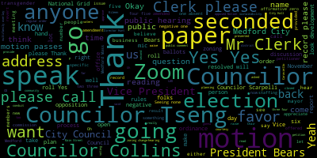
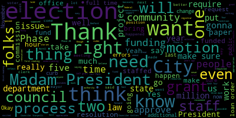
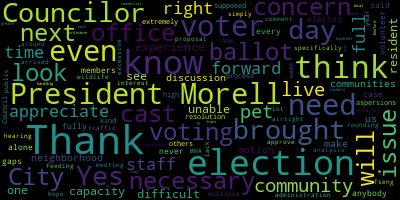
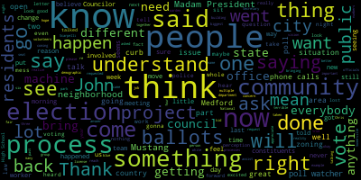
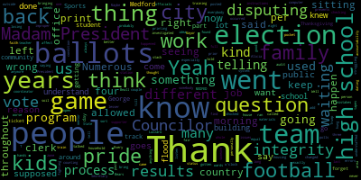

AI-generated transcript of City Council 11-14-23
English | español | português | 中国人 | kreyol ayisyen | tiếng việt | ខ្មែរ | русский | عربي | 한국인
Back to all transcripts
Heatmap of speakers
[Morell]: from Medford City Council, November 14, 2023 is called to order. Mr. Clerk, please call the roll.
[Hurtubise]: Vice President Bears. Present. Councilor Caraviello. Present. Councilor Collins. Present. Councilor Knight.
[Morell]: Present.
[Hurtubise]: Councilor Scarpelli. Present. Councilor Tseng. Present. President Morell.
[Morell]: Present. Seven present, zero absent. Please rise to salute the flag. Announcements, accolades, remembrances, reports, and records. Records, the records of the meeting of October 24th, 2023 are passed to Councilor Tseng. Councilor Tseng, how did you find them?
[Tseng]: I found them in order and moved to approve.
[Morell]: On the motion of Councilor Tseng, seconded by Councilor Collins. Mr. Clerk, please call the roll.
[Bears]: Yes.
[Collins]: Yes. Yes.
[Tseng]: Yes.
[Morell]: Yes.
[Tseng]: Yes.
[Morell]: Yes. Yes. Yes. Yes. Yes. Yes. Yes. Yes. Yes. Yes. Yes. Yes. Yes. Yes. I will also look it up to jog our memory from what we met on.
[Bears]: This was on commissions, and we've met on drafts for Youth and Gender Equity Commission's starting phase, so motion to approve.
[Morell]: On the motion of Vice President Bears, seconded by Councilor Collins. Mr. Clerk, please call the roll.
[Collins]: Yes.
[Unidentified]: Yes.
[Collins]: Yes.
[Brian Murphy]: Yes.
[Morell]: Yes. Yes. Sub in the affirmative zero negative motion passes.
[Bears]: Madam president motion to suspend the rules to take papers two three dash four four five two three dash four five oh and two three dash four five one under out of order.
[Morell]: two, three, four, five, four, four, five, two, three, four, five, oh, two, three, four, five, one.
[Bears]: That would be the grant of location followed by the elections.
[Morell]: On the motion of Isis and Bears to suspend the rules to take those papers out of order seconded by Councilor Tseng, Mr. Clerk, please call the roll.
[Hurtubise]: Yes. Yes. Yes.
[Unidentified]: Yes.
[Morell]: Yes 7 the affirmative 0 negative motion passes the rules are suspended to take those papers out of order starting with 23445 notice of a public hearing petition for grant of location National Grid North Andover Mass proposed electrical main new conduit Main Street National Grid plan number WR-306-58427-4 Medford Mass the clerk's office You are hereby notified that by order of the Medford City Council, the Medford City Council will hold a public hearing in the Howard F. Alden Chambers at Medford City Hall, 85 George B. Hassett Drive, Medford, and via Zoom on Tuesday, November 14, 2023, at 7 p.m. A link to be posted no later than Friday, November 10, on a petition by Massachusetts Electrical Company, doing business as National Grid, for permission to construct a line of underground electrical conduits, including necessary sustaining and protecting fixtures under and across the public way, or ways hereinafter named. Wherefore, it prays that after due notice and hearing as provided by law, it be granted a location for and permission to excavate the public highways and run and maintain underground electric conduits together with such sustaining and protecting fixtures as it may find necessary for the transmission of electricity said underground conduits to be located sustainably substantially. in accordance with the plan filed and marked Main Street, Medford Mass Plan number WR-306-58427-4, urgently dated July 13th, 2023, and received and filed in the office of the city clerk on August 18th, 2023, and available for inspection in the office of the city clerk, Medford City Hall, Room 103-85, George B. Hassell Drive, Medford Mass 02155. The following are the streets and highways referred to in plan WR-306, R30658427 Main Street National Grid to install beginning at a point approximately 15 feet southwest of the center line of the intersection of Main Street and South Street.
[Tseng]: Motion to waive the reading in favor of summary.
[Morell]: On the motion of Councilor Tseng to waive the reading in favor of a summary from the petitioner. Seconded by Councilor Scarpelli. Mr. Clerk, please call the roll.
[Unidentified]: Councilor Caraviello?
[Hurtubise]: Yes.
[Morell]: Councilor Palacios? Yes. Yes. Yes. Yes. Negative motion passes. Do we have a representative from national grid? Uh, if you want to come up to the mic, um, and then do we have a city engineer here or just national grid? Okay. Um, Yeah, if you could just, that should, one second, that mic should turn on, otherwise, or you're gonna put it, okay. And then just name and address for the record, please.
[Coulter]: Yes. Yep, yep, yep.
[Morell]: You're good there.
[Coulter]: Hi, my name is Bob Coulter from National Grid.
[Morell]: Thank you.
[Scarpelli]: Mike Noville from National Grid.
[Morell]: Yep.
[Scarpelli]: Cam Hansel from National Grid.
[Morell]: Thank you. Yeah, if you could just give us a summary of the project that's before us.
[Coulter]: Yes, hi, National Grid is intending to place three conduits down Main Street and approximately right in front of the fire station, down beyond the medical building, attaching two manholes together. This will allow us to place a new piece of cable. The existing infrastructure that is there is no longer usable. It's collapsed. We can't get our cable through. So we're intending to place a new conduit down through that area.
[Morell]: Thank you. Thank you.
[Scarpelli]: Thank you. What time of day will this work be? You can determine that. okay so we can do something at night because right now that area is a mess traffic wise so and the last piece I know maybe the city engineer the paving was that going to be curb to curb?
[Coulter]: Working with Owen we're our intention right there is to do the bike lane portion of that and we are going to be responsible for the entire square footage of the curb to curb paving. Um, that could be done anywhere else in the city. That was the intention.
[Scarpelli]: So we'll be done curb to curb.
[Coulter]: Uh, that particular area will be, um, the bike lane, the distance of the bike lane, approximately three ft. So we won't go all the way curb to curb in that area, not to just to keep that a narrower excavation trench. But in place of doing the curb to curb that we are responsible for, we will do that in another area of the city.
[Morell]: City engineer. Yeah, if you want to come up, you can explain that. Thanks, sir. I appreciate that. I just didn't hear perhaps.
[Wartella]: So, hi, I'm Owen were tell a city hall. We have discussed this with National Grid about the restoration limits going curb to curb. Once we've just repaved it seemed that it could be more problematic in that scenario where they could undermine what we just did. So we limited it the restoration to the bike lane so that they could do a saw cut line on the paint line, and then it would seal the seam and then come back through and do the painting of the bike lane and milling and paving in that area.
[Scarpelli]: Okay, but are we now in the practice, because it's great news if it is, but that now our public utilities that come in to open up our streets, it'll be curb to curb like we do with the private entities as well?
[Wartella]: That is normally the case, yes.
[Bears]: Thank you. All right, that's great.
[Wartella]: Thank you.
[Bears]: If I could just engineer we're tall. Thank you. And my understanding is in this case because it's brand new In this case we would feel that going milling curb to curb right would undermine what we've just Right, right. So you're gonna do that. But then the square footage that they otherwise would have been responsible for we're gonna get repaid somewhere else I'd love to take it if we can Elm Street Yeah. Yeah. I just want to make sure, cause that sounds like it, that should be, that seems fair to me. So.
[Tseng]: I, there was a point in here about sidewalks. I just wanted to make sure that when we redo the sidewalks that we're doing them with concrete and not asphalt, I see.
[Coulter]: Yeah. We should have like for like, they are concrete. They will be returned as concrete.
[Scarpelli]: Great.
[Coulter]: Thank you.
[Scarpelli]: Now, if I can, while the engine is here. How long, again, will the process take for this project?
[Coulter]: We're anticipating approximately one week of completion.
[Scarpelli]: All right. So I think that two reasons for the question, that area is a mess. I think we all know that. Now that it's all right turns there, I mean, that area's just flooded in the morning now. This could be something done at night with the city's request. Is there a better time to do it?
[Wartella]: It would be at the discretion of the mayor.
[Scarpelli]: Police, okay.
[Wartella]: All right, we'll have that conversation.
[Scarpelli]: For safety reasons, we would defer to the traffic sergeants. And that's something that if we can, as part of the record, we'll reach out as part of a motion to reach out to the chief of police to request their thoughts. And if it's not that we have a detailed informational plan that goes out to our residents. And just because that, I take that, I think everybody knows that trip. We've heard phone calls and emails from multiple residents about that right turn only being a major change. And then if you drive through Medford Square, now you see why, but I think that making sure that everybody's informed of what happens if it does happen during the day. But thank you, ma'am.
[Morell]: Thank you. Would you like to make that a P paper? Please, if you can. Vice President Bears.
[Bears]: Thank you, Madam President. An engineer should we amend the conditions here to reflect the additional paving that we were just so graciously told that the National Grid would like? Do you have suggestions we amend number five to reflect that? Do you feel like we need to change? Okay.
[Hurtubise]: I have a suggestion. I'm here for questions.
[Bears]: Yeah, great. Thank you.
[Morell]: Any other questions? We do have to open the hearing to any other questions for councilors at this time.
[Bears]: Just I would move to amend condition five to reflect that National Grid will, you know, pave another portion of road in the city based on the square footage of what they would have paved curb to curb.
[Morell]: Should we take that now before we open up the public hearing or after? I'll take the motion now. So we have a motion from Vice Mayor Bears to amend condition number five to reflect the curb-to-curb paving that will be done in another part of the city in lieu of this specific parcel. Seconded by Councilor Tseng. Mr. Clerk, please call the roll. And then, while he's writing that down, So we have a policy ordinance in the city as far as not reopening our streets again right after we paved them. It's five years, right? Is this because this infrastructure has collapsed and this is considered an emergency or just because it's a public utility? How is this occurring, I guess?
[Wartella]: I would recommend that council asks National Grid why this is considered an emergency work 16 months after the case.
[Morell]: Okay. Yeah. Could you tell us why this is considered?
[Coulter]: Yeah, it's we've been working through multiple permitting issues trying to accomplish this. So it did take some time to start that whole process.
[Morell]: So yeah, you would have done this earlier.
[Coulter]: We would have done this early. That's that's correct.
[Morell]: Okay. Thank you. Um, so, Mr. Clerk, call the roll on the motion from vice bears to amend condition five.
[Hurtubise]: Yes.
[McGilvey]: Yes.
[Hurtubise]: Yes.
[Morell]: Yes. Seven. The affirmative. Negative. The motion passes to five. Any further questions from the Councilors at this time? As this is a public hearing, I need to open up the hearing. So if there is anyone who would like to speak in favor of this paper, please come to the mic or raise your hand on Zoom. Our friends from National Grid, that would be you as far as speaking in favor of this. Are you in favor of this paper?
[Coulter]: I'm in favor of this paper, thank you.
[Morell]: Thank you. Is there anyone else who would like to speak in favor of this paper? Seeing none, this portion of the hearing is closed. Is there anyone who would like to speak against in opposition of this paper? Please come up to the mic or raise your hand on Zoom. Seeing none, this portion of the public hearing is closed. We do have a B paper I can take and then I'll see if there's a motion we want to make. So we have a B paper from Councilor Scarpelli. Do you have the language for that? Could you read it back?
[Hurtubise]: Councilor Scarpelli's B paper is to ask the chief of police for his thoughts on this matter, and then to get a detailed information plan to go out to residents.
[Morell]: Right. Thank you. So on the motion on the B paper from Councilor Scarpelli, seconded by?
[Bears]: Second.
[Morell]: Vice Chair Bears, Mr. Clerk, please call the roll.
[Hurtubise]: Vice President Bears.
[Balboni]: Yes.
[Hurtubise]: Councilor Caraviello. Yes. Councilor Collins. Yes. Councilor Knight.
[Balboni]: Yes.
[Hurtubise]: Councilor Scarpelli.
[Morell]: Yes.
[Hurtubise]: Councilor Tseng.
[Morell]: Yes. President Morell. Yes.
[Bears]: I have a motion to approve as amended pending the six day public comment period.
[Morell]: I have a motion to approve as amended pending the six day public comment period seconded by Councilor Scarpelli. Mr. Clerk, please call the roll.
[Goloso]: Yes.
[SPEAKER_19]: Yes. Yes.
[Morell]: Yes. Seven. The affirmative zero and the negative passes. Thank you very much. Going to two three dash four five zero. 23-450 offered by President Morell, Vice President Bears, and Councilor Caraviello. Be it resolved by the Medford City Council that the Elections Commission and Elections Manager provide a report to the Council listing any and all issues or procedural errors that occurred during the administration of the 2023 municipal election. Be it further resolved that the report includes specific responses to, one, the misprinting of ballots, two, the inaccurate instruction sheets provided to voters with mail ballots, three, the trainings that provided incorrect information to poll wardens, and workers regarding voters bringing materials to assist them in the voting booth, and four, persistent issues with the counting of ballots in a timely manner and release of incomplete, unofficial election results to the public. For the result, the mayor provided the council with a supplemental appropriation request to restore the full-time staffing levels in the election department. Vice President Bears.
[Bears]: Madam President, could we read Councilor Scarpelli's paper and join it with this one?
[Morell]: Do we have to take a roll call on that? So we have a motion for Vice-President Bears to join 23-450 and 23-451. Seconded by Councilor Scarpelli. Mr. Clerk, please call the roll and this is the roll to join them. And then I'll read the 23-451 next. Vice-President Bears.
[Hurtubise]: Yes. Councilor Caraviello. Yes. Councilor Collins. Yes. How's the fight? You're up.
[SPEAKER_19]: Yes.
[Morell]: Yes, some of the inferiors do the negative motion passes, the papers are joined, going two, two, three, four, five, one offered by Councilor Scarpelli. Be it resolved that the election coordinator report back to the city council with a detailed report and findings detailing the municipal election, which includes, but is not limited to absentee ballots, polling rules and regulations and complaints and malfunction. So I'm going to go on order as far as the names of the papers. So the vice mayors, Councilor Carbello, Councilor Scarpelli.
[Bears]: Thank you, Madam President. I could go through everything, but then I would leave nothing for my fellow councillors. But there was a litany of procedural errors and issues with the administration of this election, many of which I personally believe would not have occurred had the department been fully funded as this council requested and had the department not had staff turnover as this council also requested. There's a listing here, the ones that I really want to bring to light right now that I'm sure my fellow councillors will talk about other issues. Last election, November 2022, the state election, the city also released incomplete, unofficial results that did not include, to my knowledge, early in mail voting. I don't know if that's what happened last Tuesday, but incomplete, unofficial results were once again released to the public. We had been told, as we asked for an update on the previous election, that this would be fixed. It was clearly not fixed. folks were here for up to at least four hours after polls had closed, maybe even longer than that, trying to fix an issue that shouldn't have been an issue. I just want to put that out there that left a lot of folks in the community concerned about how ballots are being counted, etc., having a complete tally and accurate unofficial results. I also just want to put out there that Again, incorrect information was given to voters both by mail and at polling locations. Incorrect information as to the date that mail ballots should be returned and a sheet went out that was for the previous year's election. That should not have happened. And folks were being told that they could not bring materials into the booths to assist them or provide guidance to them while they were voting. And that's against the state voter bill of rights. So again, that's just a couple of the things that I want to bring to bear. I know other folks have other things they want to bring to bear. I just think it is a serious issue when we need. I don't believe that any of these issues resulted in an outcome. that is different from what the outcome should have been. However, we need to have beyond reproach trust in the process. You can't have mistakes like this. You certainly can't have series of mistakes and errors like this because perception is reality to a lot of folks. And there's going to be people who won't believe anything that I'm saying forever about this. And that's a shame. We need to have full trust of as many people as possible in this community and the absolute and unimpeachable integrity of the electoral process and errors like these hurt that mission. So I hope that we will get very quick guidance and explanation as to why things happen the way they happen, and quite frankly, very quick action from the mayor to make sure that they don't happen again. And I think that action needs to come, not just in reporting to us what went wrong and how they're gonna do better next time, because that's what they did last time. We got a report about how we're gonna do better, and then a lot of the same things happened again. So it's an office that needs to be funded and needs to be staffed appropriately so that you don't have errors like this occurring. Thank you, Madam President.
[Caraviello]: Thank you, Madam President. I think Councilor Bears is right. I'm not here disputing the results of the election. They are what they are. But it's the integrity of the office that's the question here. And this isn't a question just for MEDFED. This is why throughout the whole country We're seeing people losing faith in elections by exactly what happened in our city. It's not a Trump thing or a thing. But again, I was a full supporter of bringing in an election coordinator because I thought we would do a better job. And the job has gotten worse. If I had to do that vote over again, I would have probably left to keep it in the hands of the clerk. Because when the clerk ran the elections in prior years, We've never, ever had these kinds of issues. People sitting here till 1 o'clock in the morning, waiting for ballots, waiting for questions. You had tapes that didn't add up to the results that were posted. Numerous, numerous errors, like Councilor Beall said, dating back to, printing of the ballots, wrong instructions. People get, I don't know how our computer system allowed us to print out three and four ballots per person, per household in different wards. I came in here with a stack of eight ballots in one house. How does that happen? We have no idea how many of those ballots were sitting out there with no accountability. How many ballots did we print? How many ballots are left over now? again, counting ballots that were supposed to be in public. Those things just shouldn't happen. And I say, and this is the reason people don't want to come out and vote, not just in here, but throughout the country, because of the integrity of what goes on here. We've investigated people in this building, the lesser things, I think, Some sort of outside audit needs to be done to find out why these mistakes occurred again and again, especially when Secretary of State's called you in the morning of that election telling you were doing things wrong. And after they hung up on you, your people went back and said, don't listen to what they told you. You do what I tell you to do. That's not how this process is supposed to work. So be fair and equal to everybody. You shouldn't be telling people who to vote for in elections. You shouldn't be telling people what What kind of materials? If somebody wants to bring something in their pocket with them, then they're allowed to do it, as long as it's not open to the public. We had improper training of the officials here. We were understaffed at the polls. Every election, we always had someone checking in and out. That's not the process anymore. Again, I'm not disputing the results. I'm not saying they would have changed. I'm just disputing the integrity of the office.
[Scarpelli]: Thank you, Madam President. Thank you, Councilor Bears and Councilor Caraviello. I think that my frustration is what's felt throughout the community. You said something very important because what bothered me more than anything in this time in our country, you want people to get involved. And I had five to six people call me and say, you know what? I'll never, ever vote. in an election for the city ever again. I'll leave my vote just the national agenda and that's it. Because that's how disgusted they are. And I can see why, being part of it. This is, and I'll give you an example. Councilor Caraviello did, in running his election. He was honest, he was fair, he worked hard, and he asked volunteers to come out. And those volunteers came out to assist, like any candidate could. Any candidate could have done what Councilor Caraviello did. Now, it didn't come out in his favor, and that's life. But to hear the horrific issues that poll workers were put in, and the poll watchers, so people don't know, you're allowed to have poll watchers, and it's a machine. So the poll watchers go out. It's a calculated strategy where they're allowed to have poll watchers sit in a relatively close area that you can hear and see the process. The process is very simple, that the poll watchers There was talk that they were told they can't sit down. Then they were told they can't sit down if they bring their own seats. And if that's the case, OK, bring your own seat. Pole watchers sat in their seats. And then they were told to move 25 feet away. And then the process was very simple. The process that by law states, in the general laws that we had attorneys pass out to each polling station, each warden, and it said straight out, the process is such, when the person approaches to vote, if they have a license or not, because we had the new scanning system. And believe me, I do not blame the poll, the workers that are at the poll, I don't blame them, because a lot of them are great people and they just weren't prepared, but they had the licenses. They have the license, you're supposed to sweep their name and address. They're supposed to say, George Scarpelli, 27 Butler Street, and the poll worker responds back, George Scarpelli, correct. for the purpose of clarity and transparency. And then what they do is that person has a book, same as the workers do, and they check off who comes in and votes. And then if you have a machine that works for you, volunteers that want to work for you, you then have people pick up those books every two to four hours. And then you have people in offices or at homes calling people and saying, hey, we see you haven't voted today. Do you need a ride? It's a machine. It's done all over the country. What we saw this past Tuesday, I'm not even gonna bring up a formal, maybe I will, because I said what happened before, I said, please, this is why this country is such a mess. Conspiracy theories through the roof, and I'm not a conspiracy theorist, I hate it. And what happened this past week and the weeks before this and understanding how this process went was a disgrace. How much money did we lose? When you don't open up the boxes of the ballots to a few days before you have to mail out the mailing ballots, and you realize you have someone's name spelt wrong, so they have to be thrown away. Now you have to get ballots reprinted and rushed in, which is thousands of dollars. And then they go out and then we realize that we're getting phone calls from Ward 6 saying everybody that ordered, that requested four ballots got eight. Everybody that got asked for two got four. Everybody asked for three got six. And then we had to reassure the public that even though it looks bad, they cannot vote three to six times. And we said that day, that meeting before the election, please. If it's because you're understaffed, ask for help. If we have to approve anything from this council to assist, bring in a thousand people from the state, whoever you need to assist. Now, Councilor Caballero's team was very proactive. I know for sure, because my wife was one of the poll watchers, that at her location, she showed up at seven where polls open, correct? Well, at 7.30, they still weren't ready to go. Then we heard some places that we had machines that weren't working. By law, when you test a machine, the notice has to go out to the public and it has to be done in an open process. Before the election, that process has to be open to the public. They come in and you can watch the Elections Commission test the machines. That didn't happen. That didn't happen. And then as you went through the whole process, we will tell you that we were given a notice from the election director that said, the votes that were taken, the votes that were taken from early voting and absentee voting will be put through the voting machine here at City Hall at 8.30 in the morning and then posted at eight o'clock here at City Hall. That's a memo that's public that went out to the election officials, elected officials. And then you realize, now you go through the numbers. You sit there and you go through the numbers, you have people getting their numbers, and it's a mess. There was talks that people coming back saying that the police were being yelled at by wardens, that ballots were being counted, they didn't understand where the ballots were. We had people here counting ballots without being in public. Now that's, that's, it's, it's not to, it's, it's, it's, is it, does it affect the election? No, I don't think it affects the election, but the perception of it is terrible. And if this happens in any other, any other department, things have to be taken swiftly and quickly and making sure this doesn't happen again. So I'm gonna ask for, if we can, as a resolution, I would amend the existing paper to ask for our election commissioner, our election director, our commission, to come before this council to explain in detail what happened. And one of the biggest questions I have from a lot of people that were waiting that night at 835, we had probably between, I believe it was 10,500 votes. And they said, that's it. And we said, wait a second, Medford has never, never been that low. What happened to the ballots that were counted in the morning? We don't know what you're talking about. So then all of a sudden at one o'clock in the morning, they posted something that said they found the ballots and it was 4,000 more ballots and this is what it was. Regardless who won, who lost, That just doesn't look good. Perception is reality. And this is what, this is the type of situation that brings the fire to the ignorance of our country sometimes. And that's what's sad about this. So the reason for this, the reason why I want to move forward and, and get a detailed report, and then ask for, you know, the Secretary of State's office to get involved to them do an audit, because we need answers. So people can understand that your elected officials are holding people accountable when they're not doing their job. So we can squash and move forward for our next elections without any other issues or concerns. Because like Councilor Behr said, perception is reality. I said it the night, the week before the election. Perception is reality. And what happened is exactly what we would hope, we were scared would happen. Now you have a room full of people that are just as upset because the process was terrible. It was terrible and somebody has to be held accountable, period. Because in my position, if I left a little kid in the park by himself unattended, guess what? The next morning, I wouldn't be working. So in the elections department, when you make these many mistakes, something has to be done. So Madam President, that's my resolution. I appreciate it and thank you.
[Morell]: Thank you. Councilor say.
[Tseng]: Thank you, President Morell. I think what's been said here really encapsulates what what went wrong process really does matter. Um I think we all agree that the results wouldn't have changed, but the process really doesn't matter. And Councilor Scarpelli is absolutely right when he says that perception is reality. We know that this is a really difficult time for democracy in our country. We know that there's a lot of questions about elections. And we know that we need to build trust in our election system. And that trust, it's not just about trusting the election system. It's about having unimpeachable trust in the election system. Elections are the holiest part of our democracy. And our democracy is a sacred system in itself. And we need to really we need to defend it. We need to make sure the process works. I, we, you know, we, the other Councilors have really, I think, well enumerated the number of issues that we saw before election day and on election day. And we gave, and before this election as well, we gave the administration a fair chance to fix their mistakes. We passed resolutions. We demanded scrutiny. We went through those items line by line. We got assurances that they would be fixed for future elections. And we see what the product is today. We need... We need not only to know why what went wrong went wrong. We need to know what accountability looks like. We need to demand that accountability as well. And it's good that we've had safeguards in our system to fall back on, like the barcodes that guarantee that each person only has one vote. But we shouldn't have to rely on our safeguards to have faith in our system. We should have faith just because the process has done well. and so there's not much I can add on to what's been said because I think what's been said encapsulates pretty well what we need to fix, the accountability we need to demand, but I just wanted to put my thoughts and statements on the record as well.
[Morell]: Thank you, Councilor Tseng. Councilor Collins.
[Collins]: Thank you, President Morell, and I appreciate the councilors who brought this forward. I want to affirm what all of my colleagues have said so far. It shouldn't need to be restated that Our constituency deserves an elections office that is fully equipped at any time to defend full and fair access for every single voter. Individual staff members and volunteers and elected should not be having to fill the gaps or notice gaps or individually lobby or push staff members to do the right thing and correct issues at the 11th hour on election day. But this was the case last Tuesday. That was my experience. It's alarming. for anybody who works with City Hall in any capacity as an elected, as an appointed, or as a volunteer. That should never be an option, let alone be necessary. I think we all agree if even one voter is unable to cast their ballot because of incorrect mail ballot return information or unable to cast their ballot because they were you know, aspersions were cast about, can I bring my voter guide into the ballot? Or even if that concern is arisen, that concern isn't supposed to happen. That's why we have voter rights. That's why they're extremely important in this city, throughout the Commonwealth. If we are condoning those issues in our elections office, even for one voter, then we've failed. that's how high of a bar that we have to have for elections. As Councilor Scarpelli and others mentioned, we're in an age where, unfortunately, people are out looking for reasons to cast aspersions on the voting process. We cannot continue to open the city up to this kind of liability, and it's extremely frustrating because the City Council has brought up this issue before. We've tried to prevent this issue from happening before it happened for a second time, and it did. And we are saying now, as a council, we can't condone a disorganized and inconsistent voting experience, or even really a difficult voting experience for any voter. That's not how it's supposed to be. Voting isn't a privilege. It's a right, and it shouldn't be difficult. It should be easy. And it was difficult. I appreciate the resolution to ask the administration for appropriation to fulfill full staffing in the elections office. I think that's necessary. I think we saw it was necessary before this election. And now I think that we're again seeing the symptoms of an underfunded essential municipal service. I think that we need to see this office restored to its full capacity because this is what a lack of capacity looks like. We need to see what accountability looks like, as Councilor Tseng said, and we need to know what went wrong specifically, and we need to know what will change specifically. tomorrow, next week, the week after that, so that our multiple elections next year will be airtight and that every resident that has felt a lack of confidence or disenfranchised by this process can know that our next elections are multiple, very consequential elections next year will be airtight. So I hope that the administration is listening and I hope that they will respond with the urgency that we feel. Thank you.
[Morell]: Thank you, Councilor Collins. I just want to make it very clear, I believe my fellow councilors have covered pretty much everything. I do just want to note that elections are objectively more complicated these days. There's early voting, there's permanent mail ballots, there's election day voting, and The council, I think, really under the request and advisement of our previous elections coordinator, moved to that commission format to streamline this process. And unfortunately, as a result, that commission and that office, well, not the commission, but the office was understaffed. And this is something that council pointed out time and time again. We asked for that office to be staffed up, and it was not heard. So we did one thing, and then we got a negative outcome from it, because the the mayor's end was not upheld essentially from our wishes. So again, I think just want to make both those things clear that there is a lot of moving pieces. There are more moving pieces than there ever have been in our elections or local elections. And we made a change that was asked for and we believe would absolutely streamline and make this process easier, but without the staffing. It doesn't work, so I appreciate Vice President Bears bringing that up, as well as the appropriation for that staffing that we've been asking for this whole time. So I'll go back to Vice President Bears, and then I know there's likely a lot of folks who want to speak on this, so I want to make sure we can open up the floor.
[Bears]: Thank you, Madam President. I'll be briefer, because you basically just made my point. We voted in the spring of 2022 to adopt a piece of state law that modernized the system and moved us from the clerk and registrar voters to a formal elections commission. The intent of this body was that we would have an elections department with a director that would be at least as well staffed as it was previously. Under the clerk-registrar-voter system, you had the full-time clerk, three full-time staff in the elections office, as well as the full-time elections coordinator for much of the year. Then you also had the volunteer board of registrars. That was an oversight body. We moved to the Elections Commission and the budget came back. We went from five, essentially five full-time staff, to two and a half. Right? We went, we now have two full-time staff, one 20 hour a week, halftime person. That position is not even filled because nobody wants it. It doesn't make sense to have a 20 hour a week position. You had a ton of work of this election then fall on election commissioners who are not supposed to be running the election. They're supposed to be certifying results, overseeing it. They're not supposed to be in the nitty gritty. I mean, the last people in the office were the elections manager and the elections commissioners and LHS, which is the service the state uses. Why are the elections commissioners cleaning up this mess at the 11th hour? That should be what the staff is. Staff, you should have me fully staffed, so you're never in that position. The commission is an oversight authority. They're not meant to be working. And I just want to be working staff. And basically, I just want to be really clear here. When you basically cut the staff in half and then you try to backfill with volunteers or poll workers or temporary workers, it's not gonna work out. And we were very clear about that from the get-go. There's an election in 14 weeks. There's an election in March. There are four elections between the one we just had, including the one we just had in next November. As the president just said, elections are more complicated than ever. They're more frequent than ever. They require more resources. And instead, it seems that the choice was made that this was a place where we could find cuts and save money. Now, I think we all know my position that the city budget is massively underfunded. I don't think the place you start finding money is in the elections department. When the council explicitly voted to modernize and fund the department because elections are getting more complicated, and requiring more staff time and requiring more attention, not less. So even if we get accountability, even if there's changes of whatever kind, even if we get a report that says, here's all the things that we did wrong and we're gonna do them better next time, it's not gonna get fixed unless the department is fully funded, staffed and staffed competently. And that needs to happen. So this council has been saying that the whole reason we tried to do this process was to get us there. We did what was within our authority. to make that happen. And then, as President Morell said, the follow up wasn't there. The actually funding and appropriating and implementing this modernization process fell flat. And we're seeing the results this year, in addition to the November 2022 election, where there were some of the similar mistakes that we saw this year happened as well. So, you know, all this council can do at this point is put forward resolutions, and then, as Councilor Scarpelli said earlier, approve the appropriations when they come down, because if they had come down, I'm sure we would have held a special meeting to approve anything to get the additional surge resources in. The call never came, and we don't have the authority to make appropriations. So that side of things needs to be addressed as well. Thank you.
[Morell]: Thank you. Any further discussion from the council at this time? Councilor Tsengng.
[Tseng]: just more, this is more of a detail, but I would like to see what, if there is a report that comes out of this, I would like to see analysis of the low staffing levels, the funding problem, very specific about those questions. I would also like to see, I believe that we had talked about, or the mayor's administration has decided that we would rely on some seasonal more seasonal employment of employees. And we talked at length back then when we were reviewing the budget about how we needed full-time staff for that department. And I'd like to see reference to that in the report.
[Morell]: Would you like that as an amendment?
[Tseng]: Yes, please.
[Morell]: Thank you. Any other further discussion?
[Scarpelli]: I think we are at the point where everybody really expressed the same thing. So I think the governing body in the state needs to get involved, and I think that this council should send a letter to the Secretary of State's office, to Galvin's office, so I'd make that a formal motion that we craft a letter, send it to the Secretary of State's office, and ask them to look into this process. Please. And just if I can, Madam President, I don't want people to understand that when we heard all these issues, the poll workers that are there are maybe mostly the sweetest people in the world. They're doing something that's thankless, truly is thankless. But one thing that was resounding throughout that day is how they weren't trained properly. They didn't know what was right. And the sweetest woman that I love dearly, when I went to vote, she looked at me and she said, the first three letters of your name. And I said, no, that's not how it goes. But these are the issues that went on everywhere. We had one poll watcher that was put 25 feet away in the corner, was presented the law. She was then moved by the warden behind eight feet away in compliance. And then our elections commissioner came in and said, get out, go back to where you were. That's not the rule. So it was the arrogance as well, because you have people that volunteered. and as part of this process, which this is what we want in our country. We want fair and open involved processes. So, and again, I think that letter that we draft helps with the healing and the understand that we can move on and understand that we have something in place, Madam President, for especially November, that we feel safe and confident in our processes. Thank you.
[Morell]: Any further discussion from the council? Seeing none, if there's any members of the public who would like to speak, feel free to come up to the mic. Who wants to speak? Name and address for the record, please, and just push the button on the mic. There you go. You're good.
[Unidentified]: I'm good.
[Morell]: Yep, you're all set. Oh, yeah, yeah. I know you can't see the light. We can see it, though.
[Vepetto]: OK. And just name and address for the record, please. Michelle Vepetto. 29 Daniel Street. I'm a lifelong resident of Medford. So I was at the senior center from 6.50 a.m. to 2.30 p.m. The warden was immediately angry with me when I gave her my sheet and told her that I was an observer for the Caraviello campaign. She called someone on the phone and I was treated terribly all day. During this time, there, I witnessed at 10.50, there was an elderly woman who came in a wheelchair and asked for assistance in filling out her ballot. The woman stood next to her. She said she would read the names and then check off for her. What she said was, for mayor, do you wanna vote for the incumbent? The elderly lady was a little confused, and she looked at her, and then she said, oh yes, the incumbent. The warden read off the city council then, and she read, Beers, Collins, Tang, Callahan, Lazzaro, Leming, Roth. After each name, the warden said, should I check that one? At the end, I heard the voter ask, who else is there? The warden said, you already voted for seven. You can't vote for anyone anymore. She did not mention any of the other names. The warden said, okay, now school committee. The voter asked, no, I don't know anyone on the school committee So the warden replied, are you all done then? The woman said, yes. There were voters that came in and were told that they were at the wrong polling place. Most of those, they were told that they were supposed to be at the Brooks. Some was told they could cast their vote, but not put it in the machine. It was put in a stack of others in a big manila envelope. except one person went around and put it in the machine. The others were directed to where they were supposed to vote. At 9 a.m., a woman who asked to cast her vote was told no. She said she had to go to the book school. The voter said that I can't get there. They called Melissa, who spoke to the voter on the phone, and she told her that she couldn't vote at the senior center. There were about 15 voters that came in and were told that they were inactive and were asked for an ID, or some produced a picture ID with their address, driver's license, and others produced a credit card, passport with just a name. There were voters that did not have an ID and they let them vote. They voted and those ballots were again put in a manila envelope and not in the machine. I noted the name of a voter, Nancy Batari Batari from Riverside Ave, who came in very upset. She had a mail-in ballot. She said she never requested a mail-in ballot, always votes in person, and she wanted to vote in person. as she always does. They told her to open the envelope, and they were rude to her. She showed them it was blank, and they told her to fill it out and give it to the warden. The voter filled it out, went right over and put it in the machine, and the workers were all standing in front of her, preventing her from putting it in the machine. And she went around them, and she put her vote right in the machine. Okay. So the warden had a mnemonic envelope and she kept putting the ballots in and they were not individually labeled. And then she kept on putting it behind her or behind her on a chair. This council should be very upset at the poor caddy behavior of the warden, the election workers and Melissa. Upon arrival, the warden told me that I was not allowed anywhere near the registration table. I could only stand and I could not use one of the hundred vacant chairs to sit in. I was shocked and I am a disabled taxpaying property owner. And I was standing in a building owned by taxpayers being told I could not sit in a chair that I, a taxpayer, paid for. Melissa arrived gruffly and told me that I could only stand in the corner and that I could not use a chair, table, wall, outlets, amenities. She called the officer over to stand next to me. The registration ladies were checking in voters by last name. They weren't calling the last name or the street address. When I asked them to, I was ignored. When Miss Knight arrived, I asked to be closer to hear and asked if they were supposed to be calling out the names and addresses so I could hear. Adam told me yes and spoke to the warden and told her the rules. She got back on the phone again. After Adam left, she told me to move even further away, 30 feet from the registration table, and I could barely hear at all. One of the attorneys for the cabiano campaign arrived told the warden. who they were and moved me closer so I could observe and hear. After that attorney left, Melissa arrived at 1130, she reprimanded me loudly, and she said she didn't care what Adam or the attorney or anyone else said, that those were her rules and that they were all wrong. The workers, the wardens, and the wardens were passing notes to each other. Melissa came back. with a male and female officer told me that if I didn't comply to escort me out the building, I was shaken, I was embarrassed, I was unjustly bullied. Melissa moved the table in front of me and put lunch boxes so I couldn't even see the registration machine. So I am just asking as a taxpayer, I'm asking for a full recount to the vote to restore my faith in the integrity of the voting.
[Morell]: Thank you. Thank you. Are there any other members of the public who would like to speak? We'll just try to keep to five minutes, because I know a lot of people want to speak, and we have other issues tonight that a lot of people want to speak on as well.
[Bair]: Tiffany Bair, 14-ish Road. I'm curious, many of you up here have said that with all these things that have happened, that you're pretty sure that the election would not be different, the results. How are you guys so sure? I don't get it. It seems like it was actually quite the big cluster F. I'm not going to say the word. And so, especially the mayoral election, it was pretty damn close. With all these mistakes, this could easily have gone differently. I say let's have a fricking mayoral election. This isn't right. This needs to be fixed. And not just talking either. It needs to be like what Mr. Scarpelli said, they need to come up with a plan. But then we need to have like dates. You're gonna finish this by then. You're gonna do this by then. And someone needs to be fired, honestly. Because they didn't do their job. And election integrity doesn't exist in Medford, period. We need to fix that. Thank you.
[D'Antonio]: Good evening. My name is Anthony D'Antonio, 24 Hicks Avenue. From everything I've read this evening, it seems that this election was flawed. I can't understand that the council will accept a flawed election. You know, who knows about the outcome, whether it would be the same or not. I don't think it would be. I don't trust this city the way it's run in the last two elections, OK? We have good people running, and probably good people get in, OK? But the thing is, the damn thing was flawed. It was FUBA. I mean, I can't believe this. You can't accept this election. You have to go and do it again. And I don't want to hear about it costs money, because we have money available. Thank you.
[Morell]: Thank you. Name and address for the record, please.
[Souza]: John Souza, 359 Winthrop Street. So I was a poll watcher for the Caraviello campaign on Tuesday. A lot of you were talking about funding and money may be the issue to solving some of these problems. But I witnessed for about a three and a half hour period at the Brooks School, was over 50%, which was probably close to over 150 voters at the time, came in, gave their first three letters of their first name, first three letters of their last name, which we were able to overcome that issue and make it work. But more than 50% of them were told you requested a mail-in ballot. You now need to go over to the warden's table, you need to get cleared to come back and vote. Some of those people said, never request the mail-in ballot. Some of those people said, did request the mail-in ballot, didn't fill it out, didn't have time, didn't understand the directions, It's money. It's money. Those are dollars spent to issue those ballots that weren't used in the correct form for one reason or another. So if money is the problem, this is an area where this council can look. to potentially recoup some of the money necessary to fund these types of elections appropriately. And the fact that I'm listening to this tonight is disgusting. And I I'm like borderline speechless that this is actually a conversation taking place in the city I grew up in and love. So this needs to get solved and I agree with everybody else. There needs to be a clear definitive answer what the results of this election actually were. And we can't just assume because assuming got us where we are today.
[Morell]: Thank you. Name and address for the record, please.
[Deyeso]: Good evening, everyone. Sharon Diesso, 130 Circuit Road in Mass Avenue, Metric. I've been a resident of the city for many years and seen progress. I've seen change, new schools, older buildings rerouting. I just had a novel article published about the change in the road of Upper Governors Avenue and how it destroyed about 40 homes' property value. Like thieves in the night, they came, put them down, claimed that we all got flyers. Nobody got a flyer. Anyway, these are just some of the examples that go by us. It just, what's gonna happen? The next thing that's gonna happen, we'll have another election like this, but I won't.
[Morell]: Oops, I think you're accidentally touching the button. There's a button, just don't. Oh, stop touching it. Hang on, hang on. Once and then I'll tell you. There you go, okay, nope. Once, okay. Just touch, okay, push it once. Okay, hand off, hand off. Okay, you're good. You can't see the light.
[Deyeso]: Can you hear me now? Okay, thank you. Sorry, I'm present. So people bring up things that are going on in the nation, et cetera, et cetera, but this is like a mini nation right here. And a big point of discussion is we should be getting some sort of things for our tax dollars. People work very hard in campaigns. They extend their time to come here. on council, school committee, et cetera. If I were to purchase a house and skipped or did something and never had my signature validated on a P&S form, I would not legally own that home. I think I'm not a lawyer, but I think I'm correct. But I really agree with Mr. D'Antonio and one of the other speakers who came up. There has to be something done about this, the results of this election. Not even a recount, I think the election, I hate to say it, because I, you know, been here a very long time, that it just was not a legal election. So you can take that into account and maybe you can go along the same steps. One thing about the results when people said, well, you know, then you can test the results anyway, it deems and behooves you yourselves because you may have even gained more votes yourselves and don't know it on the council in the school committee. Or some of you may not really have earned the seat yourselves. Thank you and good evening.
[Morell]: Thank you. I'm going to go to, oops, sorry. I know I had a hand up on Zoom, but I think, Eileen, I saw your hand up, but I forgot you were there for a little while. Raise your hand if you want to speak, otherwise we'll go to folks in person. All right, is there anyone else in person who would like to speak?
[Gale]: Good evening. City Councilors, Madam President, Mr. Vice President, Mr. Clerk, I had the privilege and honor. Sandra Gale, Fulton Street. I had the privilege of standing before this council to acquire an elections department, a department that was going to go into the 21st century. with the things that were put in place, we should have gotten there. I was approached last week by someone who said, well, you know, this must make you feel really good. No, this doesn't. It's a very sad thing. Our basic, basic functioning right of letting our voice be heard through voting sounds to me like it was voter suppression. And voter suppression should not be tolerated in the municipality of Medford, across the Commonwealth of Massachusetts, or across the United States. And if we don't stand up and demand answers, it will continue to happen. I respectfully acknowledge that counting votes or looking at the process may not change the outcome of the election. But what you need is integrity and you need accountability. You can't go through three federal elections coming up very shortly and not have some sort of accountability. And the elections are not gonna get easier, they're going to get harder. And without proper organization and proper planning and being able to work more than a 35 or 40 hour a week job, you can't get it done. It's just not possible. And it shouldn't make anybody who is an elected official in this city feel good about anything. So we need to make sure that the counts are accurate. I appreciate your time and letting me say something.
[Morell]: Thank you.
[Gale]: Thank you.
[Morell]: I'm going to go to Eileen Lerner on Zoom.
[Portrait]: Eileen, I will unmute you. A little frozen.
[Morell]: either means frozen or we're frozen. I'm sure I'll come back at an opportune time and address the record. We'll go to you.
[Melanie Tringali]: Hi, Melanie Trongali, 116 Forest Street and a recent candidate for the 2023 election. And just sitting here, a couple of things that really stuck out at me is that there was listed probably 10 to 15 issues with the election from beginning to end. 4,000 ballots, if I heard George right, were not counted, were not counted in public, or don't know how they were counted. You all said that there was a complicated process, more complicated process because of the early voting and the mail-in ballots. And each one of you said that election integrity was an issue. And given all those issues, how can you sit here and say 100% that the end result will not be impacted. I've been in business for 20 years. And whenever there is a breakdown in process, there is usually an impact on the end. Now, I'm not saying that those changes are going to be huge to make a difference in who won and who didn't win. But there should be absolute 100% proof that what happened or the counts were accurate. So thank you. Thank you.
[Morell]: Eileen, let's try this again. It looks like I got kicked out of Zoom, so it looks like our connection's bad. I keep looking a little frozen, so I don't have a lot of... Can you hear me now? I can hear you, yeah. It might help to... Okay.
[Ilene Lerner]: All right. So, I think it's a pleasure for once since I've lived in Medford that, you know, many people feel the same way, that we're not divided. We want to see a fair and free and safe and accessible election. Everybody wants to see that. And there were some issues It doesn't seem like the people who are in the know think those issues were grave enough to hold another election. And really, if we could afford another election, we probably would have enough money to have had a better result with the election to begin with, because it seems like all the problems go back to what all the problems are. With the school committee, with everything, we don't have enough money. And, and even the mayor can't manufacture money. I mean, we have to get the money some way. And that's the issue that needs to be resolved. I don't think, you know, people are fallible, they make mistakes, but How could you not make a mistake when you're so understaffed and you have such a monumental job to do? I mean, I feel sorry for the people that had to do all this work, you know, and didn't have enough help. How is that possible? It's not possible for the two people to do that job. So it was inevitable that issues would arise. And You know, we have to have a staff that can do the job. If we have a staff that can do the job, we have to have money. The whole problem, the way I see it, is not so much integrity, because I feel like all the people that were involved have integrity and they tried to do the best they could and and it got messed up and yeah the city council and the people that live here we got to demand a better result but we also got to get the money to have a better result because i don't know how anything can change without more money thank you thank you can we just get your address for the record oh nine adams circle
[Morell]: Thank you, Arlene. Is there anyone else who would like to speak?
[McGilvey]: Thank you. Harry McGilvey for Piedmont Road. I've been voting in this city since 1988 in every election. I've worked the polls for about 20 years. My only question is, when did this become so difficult? I've never seen any of that. I've never seen problems like this. When did it become difficult? What changed? Thank you.
[Cameron]: Thank you.
[Morell]: Is there anyone else who would like to speak? There's someone on Zoom. I cannot see them because my internet is not working. Okay. Anyone else who would like to speak? Okay.
[Catalo]: Name and address for the record, please. Sure. Kelly Catalo, 23 Salem Street. I was a candidate in the 2021 election and there was a lot of problems back then. And I was told by this city hall that it would never happen again and that the problems would end. We're hearing that there's 4,000 ballots that were not counted in public. I was a poll worker for the Caraviello campaign. I saw a lot of things that if any of these Councilors were sitting in the room, they would have stopped. Are we just going to kick it forward again? Are you going to kick it forward again to next year and say, we hope it doesn't happen again? You had a voter stand here. your constituent who asked you, let's just recount the vote, let's just do it, and let's prove to Medford that integrity in the vote exists in Medford. I challenge you to do it. I challenge any candidate that was on the card to call for a recount. Do it by hand. Let's prove to the voters that their election has integrity. Right now, as a voter in America, I don't know if I'll ever vote again. It's really sad, because you know what? I love this city. I love this city more than most people. And it's sad that this is where it happens, 400 years after the day this city was born. And I hope that you all bring it to an end, and you prove to the voters that they can still believe in Medford. Thank you.
[Morell]: You can address with your heart, please.
[Balboni]: Good evening. My name is Charles Balboni. I'm a Medford resident. I've lived in this city for approximately 15 to 16 years. In 2005, I was a lieutenant colonel in Afghanistan, defending the United States, defending our country. And one of my jobs was to help oversee the elections of the Afghan government. And let me just say, they did a fine better job at it than I saw the other day. Every one of you have been reelected to your position and it's in your personal and professional and financial interest not to hold another election. All of you should be ashamed. This vote, this election was an absolute failure. And to accept it is to say that you condone failure in the election, in the process that that flag is supposed to represent. And I'm asking all of you today to stand up and call for another election. If you don't, I understand. Every one of you has a personal and financial interest to keep this election as it is right now, settled.
[Bears]: Rick lost an election, she's not running again. So it's not all of us have a personal financial interest.
[Balboni]: Some of you do.
[Bears]: Okay, so not all of us, sorry, thank you.
[Balboni]: Okay, with that, Thank you very much for hearing my complaint.
[Morell]: Thank you. Is there anyone else who would like to speak? We have a motion. We have an amendment. Well, we need a motion on the original paper that's been amended by Councilor Scarpelli and Councilor Tseng.
[Bears]: Motion to approve as amended.
[Morell]: Motion from Vice Chair Bears to approve as amended by Councilor Scarpelli and Councilor Tseng. Seconded by? That's what they're saying. Mr. Clerk, please call the roll.
[Hurtubise]: Vice President Bears. Yes. Councilor Caraviello. Councilor Collins. Yes. Councilor Knight. Councilor Knight.
[Lessenhop]: There. Awesome.
[Hurtubise]: Councilor Scarpelli? Yes. Councilor Tseng? Yes. President Morell?
[Morell]: Yes. Six in the affirmative, zero in the negative, one absent. The motion passes. I have a motion to revert back to regular order of business. So moved. I have a motion on Councilor Collins to revert back to regular order of business, seconded by Vice for the Affairs. Mr. Clerk, please call the roll.
[Unidentified]: Hang on.
[Morell]: When you're ready. There was a motion, both papers are combined, so it was 23-451 and 23-450, asking for, I'll just read them both. uh... here's our members of the house of the elections commission election manager by or to the council listing any and all she's she's there's a greater interest in the news you've heard about the report with specific responses to the misprinting of ballots accurate instruction she's provided to voters let me help me let me show up in the south side of the interim i'm i'm repeating it i'm repeating after getting it back trainings that provide incorrect information to poll wardens and workers and also the paper has been disposed of so i'm reading it back as a courtesy there's no more public comment on this paper the paper has been disposed of so i'm reading it back as a courtesy i'm reading it back as a courtesy you're welcome to stay to public participation in the meeting but i'm reading this back as a courtesy there's no more public comment on this paper it's been disposed of because we voted on it
[Chris Murphy]: So voter integrity means nothing.
[Morell]: As I said. Thank you. I'll continue reading because you asked for it. Voters bring materials to assist them in the voting booth and persistent issues with the counting of ballots in a timely manner and release of incomplete unofficial election results to the public. Be it further resolved that the mayor provide the council with a supplemental appropriation request to restore full-time staffing levels in the elections department. And then that was combined with councilor Scarpelli's paper that said be it resolved the election coordinator report back to the city council with a detailed report and findings detailing the municipal election, which includes but is not limited to absentee ballots, polling rules, and regulations, complaints, and malfunctions. Scarpelli amended to ask for elections to direct the commissioner, can't remember my own writing, to explain in detail. Can you read that amendment?
[Hurtubise]: It was an amendment about sending a letter to the Secretary of State's office.
[Morell]: Yes, sorry, that was a letter. Yeah, that was a letter to be sent to the Secretary of State, and then Councilor Tseng further amended to ask for specific details related to funding and staffing related to the challenges. And that's what was voted on and approved 6-0-1 absent. But a motion from
[Hurtubise]: Councilor, I believe it was Councilor Tseng to revert with a second by Vice Mayor Bears.
[Morell]: Councilor Tseng, seconded by Vice Mayor Bears to revert to regular order of business, and now we're, Mr. Clerk, please call the roll.
[Hurtubise]: Councilor Thomson? Yes. Councilor Lange? Councilor Scarpelli?
[Morell]: Yes, uh, six in infirmary. Negative one absent. Motion passes. Running to regular order of business. 23-411, notice of a public hearing, Medford City Council, Chapter 94, Zone 8.
The Medford City Council will conduct a public hearing on November 14, 2023 at 7 p.m. in the Medford City Council Chamber on the second floor of Medford City Hall, 85 George P. Hassett Drive, Medford, Mass, 02155, and via Zoom remote video conferencing relative to paper 23-411. also known as paper 23-407, a petition by the Medford Housing Authority to amend zoning map city of Medford, Mass., dated April 13, 1965, as referenced in Medford Zoning Ordinance Chapter 94-2.2. The amendment proposes to change the zoning district designation of the property of 1-20 Waffling Court as depicted on sheets 1-6 of the plans entitled ALTA NSPS land title survey prepared by Fuss and O'Neill and dated February 6, 2022 from apartment one zoning district to a planned development district, which would have a new development standard per Medford zoning ordinance chapter 94-9.2.3. A Zoom link for this meeting will be posted no later than November 10th, 2023. For additional information, aids and accommodations, call the Medford City Clerk's Office at 781-393-2425, TDD 781-393-2516. The full materials of the amendment can be viewed in the office of the city clerk, Medford City Hall, room 103, or on the city's website at medfordma.org, slash department, slash planning, dash development, dash sustainability, by clicking on current city board filings. Advertised in the Medford Transcript and Somerville Journal, September 14th and 21st, 2023, by order of the Medford city clerk, signed Adam L. Hurtubise, city clerk. We do have the petitioner here. Just for an update on this process, this has been many months of public meetings. I think we have had a number of committees of the whole on this, some by statute that we had to have, some we just had as informational. This was brought to the council earlier. This was reported out to the CD board and their recommendation was, I believe it was 5-0. I can pull it up. It was 5-0. So again, what is before us tonight is zoning. I believe Director Hunt, she's not here. It's Danielle. Oh, there you are. If you want to just remind us, so the plan development district is a process that was added when we did the zoning recodification that was passed last March. So it's a relatively new process. So if Director Hunt could give us a brief reminder of the steps of this process, then I think we can go to the petitioner. And then I know a lot of folks want speak on this as well. So we'll go to Director Hunt first.
[Alicia Hunt]: Thank you, Madam President. Alicia Hunt, Director of Planning, Development, and Sustainability for the City. I'm here tonight with Senior Planner Danielle Evans. So this is a method that is relatively new, but it's gone through the City Council once before about how we change zoning for a specific planned development district for a specific location when presented with a project that make sense to the city, make sense within our plans. So we've submitted from the CD board actually a memo that talks about the various climate action and adaptation plan, comprehensive plan, the housing, sorry, production plan, and how this, that they considered all of those in their recommendation that this fits with us. At this time, this is, had its original referral from this board, which was a required referral to the CD board for recommendation. CD board conducted a public hearing. You have a memo that senior planner, Daniel Evans drafted for you about the recommendations. And she's here if you wanted her to speak to that or to more detail about what the community development board discussed at that meeting, or I can as well. At this time, if you were to approve this, this would be for the zoning. The next step would be that the housing, sorry, the housing authority, I apologize, you had a long meeting, but I sat in a three-hour traffic commission meeting immediately before this, so my brain is also catching up. So the housing authority would still need to apply for a special permit for the construction of these projects, and during that time would go through a site plan review process. So I will point out that there are a number of concerns around things like traffic, circulation, and trees, et cetera. Those are items that are addressed during site plan review and would be thoroughly vetted at that time. I'm not saying you shouldn't or can't consider those, but this is really about the height, the density, this is about the zoning of this, and those details like zoning does not really address trees. but site plan review does and access. So that's where we stand with this this evening. There are a number of members of the housing authority team here tonight to speak to you about this, unless you have any other questions about the process. And Danielle and I are here both to speak to the process and to the city board's considerations during their public meeting.
[Morell]: Thank you. Are there any questions from councilors at this time? I think just, I'm going to describe really just quickly, just so we, I think just cause this is a public hearing. So we have to run a specific way. I think we'll take questions from Councilors. If we haven't this time, we'll go to the petitioner, any additional questions. Then we open up the public hearing. I know there's lots of folks who want to speak. That is the time to speak either in favor and opposition. I know sometimes there is some nuance in between, but pick a time so we can, we can lodge your comments and then we will, see if we have a motion for a vote. So just so folks know the process we're gonna go through. Councilor Scarpelli, do you have a question for right now?
[Scarpelli]: Yeah, I think the biggest concern that I have is, as we're talking, as we're seeing some of the new changes we're seeing and some of the development that we're seeing, one constant comes back to me from neighbors and residents that they shared what I felt was an issue was that As we're moving forward with these zoning changes, we see that they're important. We see that they can be successful. What we don't have, though, is proper notification when we do certain jobs in our community. I don't think we do a very good job informing our constituents of projects that are coming about. I'll use Mystic Ave as an example. That evening, we talked about a building that sounds great, but I posed it for the fact that it right now, it's a unicorn, and I didn't get any answer from the administration of what the vision is for that area. No different than what's happening over at the old KISS 108 site at the T building in Wellington, that the building's being razed and we still have no vision. Now, that's very close to having two gateways of our community. And I think that moving forward with any more zoning is, to me, is a slippery slope to the fact that we're not letting our constituents know. There are some projects that organizations, I'll give you an example with our housing. There have been multiple meetings, multiple neighbors, opportunities for people to speak on different projects. I don't think we see that too often. when it comes to some of these positions and some of these projects. And I tell you, I think when we talked about putting together the zoning study and having that bring that team in that will go neighborhood to neighborhood, remember we talked about that and getting the idea of the residents of what people want Medford to look like. It seems like we forgot that. We're not doing that anymore. That's been put in the back burner. Well, we haven't done anything. We're coming up with new zoning changes and we're saying, well, we could do this now because this might work. But in totality, we still don't have a plan and we still aren't including all of our residents. So, and I think that's a concern. Thank you.
[Alicia Hunt]: Do you want to speak to the notification for this? I don't want to misspeak. So there's a notification process for public hearings, but I don't want to misspeak to it. Do you know?
[Danielle Evans]: Well, good evening. I'm Danielle Evans, senior planner. Are you talking about the notification for the project in general or? for the rezoning?
[Scarpelli]: I think for any projects. I mean, for anything that's going on in the city. I've been getting phone calls, I get 45 phone calls, it's something we're gonna talk about later.
[Danielle Evans]: So I think that- So this actual, this project's been, when the CPC and then when you're on real body approved the funding for CPA funds, one of the conditions that the CPC placed on it is that there be a very robust public input process and they built that into their budget for multiple, multiple meetings. I went to several of them on my own time in the evening just to see what was going on there. They had some for residents, some for the butters. Gabe could speak to how many there were. I didn't make it to all of them. But for that, there were many, many meetings.
[Alicia Hunt]: We didn't do mailings for this one, for this site plan.
[Danielle Evans]: Yeah, for site plan review and for the special permit is when all of the butters are noticed, but for zoning change, it's, you know, two ads run the paper, you post the public hearing notice, and it goes to, there's a list of different bodies that it goes to.
[Alicia Hunt]: I might add, there are a lot of people who have been to public meetings of this and who are here this evening to speak on this, so in my impression, they must have heard about this, so the public notification must be working because people know about this. Every time they call you upset about something we're doing, it actually indicates that they know about it, so.
[Scarpelli]: And what I'll do is I'll ask, what I'll do is I'll ask a request because I think what's getting out, because if you ask, there's a demographic that if you look at all the surveys and there's a demographic that gets the information and it seems to be one demographic, there's a lot of people, if you ask the common person in this room that's not involved with this, they've never heard anything about this because the message is getting out to the people that it seems like that are pinpointed to direct mailers or groups. So that's the problem. When I say this project, I'm saying as a whole. I'm having calls from as a whole when we're talking about different surveys and things being done around the community and your office getting back to people and saying, oh no, we sent it out. And there are times that I'm in those same neighborhoods. I didn't get anything. I'm a city councilor. So that I can't, I can't not listen or bring forth what my constituents are bringing to me.
[Alicia Hunt]: Thank you. And anytime any of your constituents have suggestions about better ways that we can notify short of us knocking on everybody's door. Sure. I, we are very open to where else can, how else can we put the word about these? Where else can we, and I will mention that Paper mailing the entire city costs about $18,000.
[Scarpelli]: So let's talk about what we talked about. Something that we were very excited about is hiring that zoning team and then bringing our vision of our development, our growth in our community. Remember, going neighborhood to neighborhood, involving everyone. Right? Having community meetings.
[Alicia Hunt]: We can't afford that. We can't afford that. I know you would really like us to do it that way, but we're going to have to have more than $100,000 to do it. That's very expensive. We requested it.
[Scarpelli]: This council requested it. It's not us. This council has requested it.
[Morell]: Thank you. At this point, we want to go to the petitioner, unless there's any other Gabriel, you're going to have to talk.
[Ciccariello]: Madam President, City Councilors, I have a presentation. I'm Gabe Ciccarello. I'm the Director of Modernization and Procurement with the Medford Housing Authority, and I'm here to present the redevelopment of Guam Court. Can I be able to share?
[Morell]: Yeah, can you make Gabe, I assume it's your teacher, Garello? That's you?
[Unidentified]: Yes. The co-host.
[Hurtubise]: Should have it now. OK.
[Ciccariello]: One second. Let's see the screen now. So we have a very deep, dedicated, mission-driven team here with us. Jeff Driscoll is our executive director. We are using the Cambridge Housing Authority as a development consultant and also an owner's project manager when we come to construction. Our counsel is Nolan Sheehan-Patton, and Hannah Kilson is here with me tonight. She's going to assist me as we get further into the presentation. Our architect is Dietz and Company, and Danny Gerpal-Attisha is here representing Dietz. And our civil engineer is Faustin O'Neill. They are here. And our traffic engineer, who performed the traffic study, is Mitch Engineer. So through this presentation, I'm just going to give you a brief overview of the walking court development. Then I'm going to turn it over to Hannah to discuss the PDD process and our requesting zoning amendment. So, Whatling Court is currently, it's 144 units of state-aided public housing for low-income seniors and disabled households. All the units are deeply affordable with our residents' rents calculated 30% of their income. Historically and to date, Whatling Court has not received sufficient operating substate to address its physical needs. It was built in 1963 and suffers from two key deficiencies. There's some pictures to the right of just your typical existing conditions within the buildings. And one of the biggest things is that it lacks accessibility features for seniors and disabled households as they're two-story walk-up garden flat style buildings with no elevators. So half of our senior disabled residents need to access stairs to get to their units. This is a bird's eye view of the Walkman Court development. As you can see, it's bordered and adjacent to some interesting properties. To the west, it's a commercial site with Whole Foods and Starbucks. To the south, we have kind of a more industrial commercial space with Elizabeth Grady, their mid-rise style buildings, commercial office space and lab space. To the north, there's a couple of residential homes, and then the Mystic River Reservation amenity. And to the east is your typical Medford two-family and single-family homes. To the top right here, this is a picture to the entrance of Walkman Court from Auburn Street, looking down towards the Auburn North Street intersection. This next picture to the bottom is from the North Street Bridge looking west. You can see across the train tracks, there's a mid-rise commercial type buildings. And to the right, you can see our two-story walk-up garden flat buildings. And to the top left is to the west of our property that shows the Whole Foods building, the Whole Foods parking lot. The picture to the right here is what the proposed redevelopment we hope to look like. And this is an elevated view from around the intersection of North Street and Auburn Street. We're proposing five structures on the site. Three of them to the north of the site and east of the site are two-story townhouse buildings. To the west of the site, we're proposing a four-story family mid-rise building. Three of those stories would be residential, and the ground floor would be podium parking and a couple common area spaces. And then scaling up towards the south of the site where the adjacency is mid-rise buildings, we're looking to put a six-story elderly disabled elevator building with podium parking on the first floor and then five stories of residential units. So the goals of the redevelopment is, number one, is to provide high quality, accessible, and deeply affordable units to our existing 144 units that are on site. But we're also looking to build 94 net new, deeply affordable units within that site. And 54 of those would be elderly disabled units, and 40 of those would be family units. We're looking to improve the resiliency and sustainability to this site, and then improve the site's connection to the surrounding neighborhood. This site is existing, has a decent connection to the neighborhood. It's used a lot as a walkthrough for people coming from Boston Ave to connect to Whole Foods, and we are looking to improve upon that with this new design. And the redevelopment of Walking Foot is a local priority. So the replacement of the 144 units and construction of new units is included in the fiscal year 21 through 25 city of Medford's housing production plan as a strategy to help meet the city's housing goals. And again, all units during the redevelopment after development would remain deeply affordable with residents' rents limited to 30% of their income. To the left here is just the, sketch of the site plan showing the senior mid-rise building is a larger building A, then there's the smaller mid-rise family buildings, building B, and then the three townhouse buildings, which would be C, D, and E. And to the right here, the top right picture is a rendering of what the proposed dedicated senior outdoor space would look like. They currently at Walkling Court have a really nice community garden. We look to incorporate that. is have a really nice dedicated senior space. And the bottom picture to the right is what the site would look like coming in off of Auburn Street and during Walkland Court. So to the east, you have the townhouse type buildings. To the west, you'd have the family mid-rise. And straight down to the south would be the senior mid-rise building. So an overview of what we've done during the resident and neighborhood engagement process. So we've had a very active and well-attended resident and neighborhood engagement process. At the time of submitting this PDV application, we've held seven resident meetings. We held five full community meetings. Before we started the full community process, we also held a meeting with the Director Butters to Walkman Court. This is just a map of what the legal notifications in the yellow, we were legally had to mail out notifications within 400 feet, but we also flyered for every meeting within that area and we went past that area out to West Street, Lyman Ave and Boston Ave. We also posted notices within and around the walk-in court site. The MHA has met with a variety of city departments, almost all city departments now, including the fire department, building department, and DPW. And we've also had the public meetings for the Community Preservation Act funding that we've submitted for. During the resident and community engagement process, some of the key topics that came up were density and height and increasing I'm just gonna block this, I can't see this real quick, sorry. Increasing the number of affordable housing at Whatcom Court, again, as identified as a strategy in the city's fiscal year 21 through 25 housing production plan. And the 94 net new units is expected to increase the number of actual residents on site by about 101%, not the number of units, but the number of residents on site by about 101%. And the senior mid-rise, again, is a five-story building. Senior mid-rise, five stories, living space, and then the covered podium parking on the ground floor. A key goal of this project, again, is to provide elevated access to seniors and disabled residents, and also families in the mid-rise building. There is a high need for handicap-assessable family housing. And we're trying to work efficient building footprints with the height to allow for more programmable interior space and more kind of accessible, usable open space on the site. And again, the building types reflect, we try to reflect the adjacency around the site to the proximity and adjacency to the buildings. One of the questions that has come up is the proximity to the trains. to the commuter rail line. And the site and facade is designed to meet HUD noise requirements using high-performance windows and insulation. We've onboarded an acoustical engineer that will stay on the project team during design development, during construction. And actually, the noise on this site currently will be greatly improved from its current situation. And all the new buildings will have mechanical ventilation installed and have centralized heating and cooling. And there's many examples of comparable development going on adjacent to railroad tracks, especially with market rate housing, mid-rise buildings being built along Boston Avenue and Somerville. There's been a question about having an access road through the site. We're looking, right now there's two entry points to get into. There's two separate entry points to get into Walkman Court, and we're looking to make it through street. And that access road would provide residents and visitors access to all of the buildings within the site. It would ensure emergency access, and it's been reviewed and recommended by the fire department. And of course, it would be designed to ensure pedestrian safety with traffic calming measures. And the parking that we have planned is based on usage for low-income seniors and families, and the parking need will be met on site. Residents living within the walkway development not have to go and park outside of the development. We've had the traffic survey done by Niche Engineering. It's determined that no traffic mitigation measures will be warranted. And then environmental issues. We've conducted a phase one and phase two environmental site assessment. Any asbestos remediation and soil removal would meet state and federal requirements. And all construction activities will be monitored to ensure that hazardous materials are properly handled. And no environmental impact statement is required because no Mass Environmental Protection Act thresholds have been exceeded or are exceeded. Now I'm gonna turn it over to Hannah.
[Kilson]: Good evening. My name is Hannah Kilson. I'm a partner at the law firm of Nolan Sheehan Patent, 84 State Street in Boston. Thank you, Madam President and Councilors this evening. I want to walk through with you the proposed amendment to the zoning ordinance. What is being proposed this evening by Medford Housing Authority is to adopt what we are calling the PDD 3 amendment, which would create a planned residential development district within Medford. Gabe, I'm going to let you. So Gabe had, if you can go back. So the first one, just talk about this planned development district would require an amendment of the zoning map. And it would require an amendment of the zoning map to situate this parcel, as we noted. The southeast portion of this parcel is bordered by North Street. The south portion of the parcel is bordered by an industrial district, which on across the railroad tracks sits the Tufts Engineering Education and Outreach Program. To the west of the parcel will sit the commercial district, which is currently occupied by Whole Foods Market, and then towards the north and the northeast is an apartment one district, which as was noted, has single family homes and two family homes. And so the first portion is to amend the zoning map to allow a PDD three district in this area. The zoning amendment under the PDD three contains certain general provisions that relate to special permit process, the site plan process, which will occur through the Community Development Board and then the special permit granting authorities, this council here. We are also proposing that the special permit that we would obtain through this council would also be sufficient to qualify for the inclusionary housing provision special permit that's currently required under the zoning ordinance. The permitted uses for the project, you can see here up on the screen, this site will only have two types of permitted uses. One will be residential uses, and the other will be general office uses. The proposed amendment would make the uses as of right detached family dwellings, attached single family dwellings, detached two family dwellings, and multiple dwelling class A, multiple dwelling class B, and senior housing independent living. Those uses would be permitted as of right, whereas a special permit would be required from this city council for dormitory, lodging, boarding houses, and for any other type of senior facility. Right now on the site, as we noted, this site has been developed since 1963 multifamily housing with nine buildings on the site, but the multiple dwelling houses greater than at 75 or six stories is not permitted as of right. And so that is one element of use that is needed in order for the development that's being proposed for Medford Housing Authority to be available. The next component of the proposed amendment is dimensional. So the proposed amendment would allow for more than one principal structure on the site, similar to what exists currently. It would provide that each of those structures on the site would have to be located at least 15 feet from another principal structure, which is similar to the current requirement under the existing zoning code. The dimensional standards that we're proposing here for this PDD are really consistent with what we think is both the intent of the PDD, which is to allow kind of flexibility for redevelopment of the Walkleen Court site in order to achieve a goal that clearly city has articulated in a number of its planning documents, which is to create more affordable housing, both for senior and disabled residents of Medford, but also for families. So the lot configuration that we would propose here for any lot that's located in the PDD 3, it would have minimum frontage of 35 feet, it would have minimum lot width of 35 feet, and it would have a minimum lot depth of 75 feet. The minimum lot area would be 10,000 square feet. and we would allow for a dwelling unit density of one unit per 750 square feet. So that expresses that we are looking to create a development density to achieve the objectives of more affordable housing available in the community. Maximum lot coverage, sorry, I can't see the screen from there. My eyesight's not good enough to follow that. The maximum lot coverage is 35%. Under current zoning, it's 30%. Landscape and usable open space, we are proposing in our amendment that that be 10% of the gross floor area. This space requirement would allow development density, again, that we think is consistent with the City of Medford's plan for this site and would enable us to build, help the City of Medford achieve its goal of 600 affordable housing units in fiscal year 2025. If the proposed redevelopment of Lockwood Court was allowed by special permit, The open space that we're proposing is, in fact, more accessible and more usable than the existing open space. Currently, the landscaped open space here is 10%, and the current requirement for usable open space is 25%. Setbacks, the setbacks that we are proposing on the site is front yard of 15 feet, side yard of 10 feet, and rear yard of 15 feet. Given the typography, however, on North Street, the PDD amendment actually requires no setback for the parking spaces located in the front yard of any lot in the PDD 3 district. And that is consistent with the current circumstances of parking at the site. Maximum height and stories. In this PDD-3, the maximum height and stories really is dependent on the residential use. Here, where our intentions are multifamily and single-family attached, the maximum height would be 75 feet for multiple family housing in six stories, or it would be 35 feet in three stories for attached single-family dwellings. Next would be our parking. The parking here, the ratio of parking would be one parking space for every two units, which is a parking space ratio that the underlying zoning currently would permit at the site for affordable housing use development. That's, I think that's great. And so I think with that, I guess the last thing to mention, maybe it's a less substantive provision, but is the PDD amendment allows for screening of mechanical equipment. And we always recognize that that is a concern to minimize the visibility of mechanical equipment on site and from the streets and from neighboring parcels. So one of the requirements for the project under the PDD is to make sure there's adequate screening such mechanical equipment. Thank you very much. I'm here to answer any questions that you might have about the amendment, but this concludes my presentation. Thank you. Thank you, Attorney Gilson.
[Morell]: Councilor Garabello, do you have questions for you? Okay. So as this is a public hearing, we do have to open up the public hearing. So I'm going to open up, call for people who want to speak in favor of the position before us, the zoning change before us. And then I will call for people who want to speak in opposition of the zoning change before us. lost my train of thought on something else.
[Ciccariello]: Should I start sharing now? Yeah, that would be helpful.
[Morell]: Oh, what I wanted to say is also there's been a number of folks that also submitted their opinion by email that the clerk will add to the report as well. So as this is a public hearing, if there is anyone who would like to speak in favor of the paper before us, this is the zoning change before us that the MHA just presented on, please come up to the mic. You can literally just say yes. You can say a little bit more. Just name and address for the record, please, as you come up.
[Cameron]: Roberta Cameron, 12 North Street. And yes, I'm in favor of this development. And if I may say a little bit more, I am a member of the Community Preservation Committee, and we very strongly supported this development because we feel that it is really critical for improving the quality of life for the public housing residents at Walkling Court. And we think that the process that was required for the public input during the conceptual planning stage has really helped to create a project that fits well in the neighborhood. And I think that this zoning is a very appropriate way of being able to bring that plan to fruition. So thank you. Thank you.
[Morell]: New address for the record, please.
[William Navarre]: William Navarre, 108 Medford Street, apartment 1B. I'm here to ask that you do approve this zoning amendment. The Medford Housing Authority has got grant money available to build more and better, deeply affordable housing at Walkley Court. Everybody supports affordable housing. Council needs to say yes to this zoning amendment so the housing gets built so that MHA can access that money. and build the housing that our community needs. Thank you.
[Morell]: Thank you. I'm gonna go to Kate on Zoom, and then I'll come back to you. Kate, I will unmute you.
[Kate Ryan]: And then just keep going. Yes, we can hear you. Canal Street, number nine, Medford. I am a public housing resident with physical and other disabilities, and I am very strongly in favor of this. It is desperately needed. One out of every 10 COVID cases, for example, will lead to long COVID, which means that more people are going to be disabled than ever in the coming years. People really, really need this. We deserve to live in as nice housing as anybody else. Thank you.
[Curtis]: Mark Curtis, 89 Traincroft Street in Medford. It's good evening. This proposed zoning change makes possible a deeply needed and truly transformative redevelopment projects. We all know that Waukling Court is outdated, in truly bad condition. And what the Medford Housing Authority, our Medford Housing Authority is proposing here, is an attractive, multi-generational community that will provide brand new apartments for existing residents, as well as new, deeply affordable housing for families. And I think this project provides more new, deeply affordable housing at one time because of this zoning change than we have seen in Medford in many years. I just want to commend the Housing Authority for the process that they've gone through. I think that this is a very well-designed and thoughtful project. It's bringing an impressive amount of federal and state funds to complement the city funds that are going into the projects. And I strongly encourage you to support it. Thank you.
[Morell]: Thank you. We'll go to Alex on Zoom. Name and address for the record, please.
[Lessenhop]: Thank you. Alex Lessenhop, 30 Wright Avenue in Medford. And I would just like to co-sign everything everyone has said before me and add that I'm strongly in favor of this project. This is a kind of opportunity we never get in Medford to develop this type of deeply affordable housing, this type of accessible housing, this type of housing for families. It's just such a rare opportunity and we can't waste it. And our public housing residents deserve dignity, they deserve you know, stable, accessible, attractive housing, just like any of us. And this is, I would urge the council to vote in favor. Thank you.
[Morell]: Thank you. Is there anyone else who would like to speak in favor of this paper, either in person or on Zoom?
[Portrait]: Roseberry portrait of 78 Orchard Street in Medford, I don't live that far from the development. I've been involved with the development for many years, starting as a teenager and now into my adulthood, I do a lot of things for a lot of the residents there. Unfortunately, I know there is opposition, but to me, if we can put more people that don't have adequate housing, into an adequate housing that has an elevator, which none of the buildings in Rockland Court right now have. And some of those residents now that live there, I know personally, are at a big disadvantage because they can't walk up the stairs. They can't even walk over to Whole Foods. They depend on people to come in and help them as much as possible. I'm one of them. I have some of the residents that call me saying I need groceries and I'll definitely go over and I'll do it for them. I've watched people come and go out of that development. I've watched it grow and now it's falling apart. And they really definitely need this building to be able to live freely and hopefully be able to get out again and do what they need to do. It's sad that they have to stay in their houses. That causes more depression. And to me, that's a health issue. And that costs us as taxpayers more money because we have to pay for those disabilities to get readjusted. And it's not fair to them. Um, there were a couple of residents here that needed to go home that wanted to speak, and that's basically what they were going to say. And I'm just here to relay their message as well as mine. I've watched a lot of people come and go, and it's sad, but we really need to let these people have a good life. We, as individuals, have a good life in our homes or in our neighborhoods, and we've watched developments go up and down. But this would give many, many people an enjoyable place to live and let them enjoy their freedom again. Thank you.
[Morell]: Thank you. I'm going to go to Susan on Zoom. Susan, name and address for the record, please.
[Gerard]: My name is Susan Gerard. I live at 26 Farragut Ave, Medford. I don't live near Walkling. Many years ago, I tutored a Russian immigrant who had pancreatic cancer, who lived in Walkling Court, and she could not handle the stairs. She had to move out. Luckily, she was able to find another senior housing unit to live in that had elevators, but others were not so lucky, I think. I also just want to say I've had many friends in Medford who are seniors who needed this kind of affordable housing, but the lists are, I think, two or three years long waiting lists And this, I've lived in Medford for 42 years and I've never seen a truly affordable housing project like Walkling Court in the 42 years really being built. And I think this is just an amazing opportunity. I know there is some criticisms and there always will be of anything that gets built, but to me, this is a beautiful chance for people to have decent homes to live in. Thank you.
[Morell]: Thank you. Is there anyone else, either on Zoom or in person, who would like to speak in favor? Seeing none, this portion of the public hearing is closed. Is there anyone who would like to speak in opposition? Please come up to the mic or raise your hand on Zoom. I'd like to speak in opposition of the zoning change. Opposed to the change. Whenever you're ready. Yeah, you can just get in line when you're ready. Name and address, please. Hi.
[Zisk]: My name is Peggy Zisk, and I live in Tadnisher Road. And I'm not really against, but I do want to point out a couple of details that the Auckland Court is a little dense. I went into the planning commission and looked at the plans, because people said that it's the same height as the building on the north side, which is the commercial buildings. But if you go and look at those buildings, there are four stories. These are six, which means that the units inside will only be seven-foot ceilings after you take out for the plumbing and the false ceilings. If anyone has ever lived in public housing, or worked in public housing, that's really uncomfortable living. It's a little bit depressing. The buildings that they have proposed for the elderly is pretty long hallways and very short ceilings. And if you've ever lived in an elderly housing building or visited anyone, your grandparents, your parents, they're not very exciting places because they don't have a lot of energy. So isolating people in a community and doubling the density is going to bring down the level quality of life. for people. They're going to have air conditioning. They're going to love that. I've already talked to some people in that building. They think it's great. They're going to have better heating. They're going to have elevators. Great. They're also going to have twice as many people. If you look at any housing project from Chicago to Somerville, they don't work. They become, eventually, over the years, people get stuck for generations in low-income housing. People who can move out do move out, and people who can't stay, and the quality of life is lower. So it's great, we should build elderly housing, for sure. Should you pack the density in twice the number of people into those buildings? No. So you shouldn't, it's fine to rezone it if you want to rezone it, but as you said before, I don't think there's really a plan. This is more a response to an opportunity. I'm not sure Menford has a plan. We have squandered quite a few opportunities down by the river where there was lots of opportunity for housing and to incorporate low income housing with middle income and high income housing, and it's gone. The buildings are beautiful, but wealthy people live there. And so I discourage you from rezoning a parcel just to fix a project and squeeze as many low-income people as possible into a very concentrated neighborhood. And currently, the plan that they have is turning kind of a nice green space if you walk around in there to purely concrete streets with lots of parking and very little green. Even though they said 10%, it's very unattractive plans. I don't know if anyone's looked at the plans. So thank you for your time. Thank you.
[Morell]: And I'm gonna go to, I know we had someone here. If you wanna come and then I'll go to Diane on Zoom and we'll go in person first. name and address for the record, please.
[Angela Murphy]: Angela Murphy, 16 Codding Street. I've been on Codding Street 67 years. I've been there when Walking Court was built as a beautiful suburban senior community. As the previous speaker said, I want to recommend that this zoning be disapproved, the change, because of all the reasons she stated, which I have written down, the same reasons. The quality of life for the residents that the buildings for the seniors is proposed for, I don't believe will be enhanced. They're going to be abutting a railroad commuter train track. The back apartments will face, if you're housebound, look out your window and all you will see is train tracks and a building overshadowing yours, which will cause sunlight to be limited because it's going to be higher elevation than your six-story building. You're condensing, again, too many people into the site. You're eliminating a lot of green space that was there. I think, while yes, there is a definite need for low-income housing, senior housing, disabled housing, I as a 72-year-old senior would not want to live there. I would not want my autistic grandson to move into a disabled housing there in this proposal. I would not want my disabled sister, who's in a wheelchair, to live in this complex. I am not against building a senior housing project, not a project, a community. I call it a community because this, to me, is a project. It's not a community. I would not oppose building something there, scaling down the six-story buildings, reconfigurating the design so that the buildings are not horizontal along the track, but perpendicular, so that the stairwells, windows will face the unsightly view, have more green space. The community gardens, they want to relocate to an area of the complex that is not fit for growing things. So nothing's going to grow. They're going to take down mature trees. And as she said, our previous speaker, the green space is going to be limited. It's not going to be a community. It's going to be a project. And our quality of life for those residents they proposed for will not be enhanced. And yes, I think Medford should build something there. Yes, I loved Walkland Court when it was built. I still love going there and seeing it and walking through it. And I one day thought when my house passed on to my children, I may live in Walkland Court, but now I would not if this proposal goes through. Let's find a plan that Medford can build on that site. And I challenge every councilor here to come down to that site and look at that site and see what they're proposing and see how congested it's going to be and see what's going to do to surrounding neighbors and the community that it's going to be integrated into and everything. Parking's going to overflow onto streets which is already crowded. and residents coming and going, visitors, health aides, Meals on Wheels people, deliveries, it's gonna be nonstop. We have one-way streets. We have bad traffic from Route 16 already. Cars speed down past the park on linemen and clotting because they're going the wrong way, and they wanna hit Winter Street before they hit another car coming down. I can't tell you how many times I almost got hit coming out of my own driveway. So 67 years I've lived in that community. This, I think, would be a shame to build this particular proposal. I think rethink other proposals. Another thing I want to say is all the public meetings, all the notices, I live on Carding Street. I don't live within the 400 radius they're obligated to inform, but I never, never once informed. of anything going on there. If it wasn't for a neighbor of mine, I would not know. And at one public meeting, I went to Walkland Court. I was verbally berated by the complex manager while the housing authority person stood there and let her berate me, try to intimidate me, and stop me from asking questions. As you can see, I'm nervous now talking here, but I'm not a dumb old woman. I know what fits there and I think everybody should go down there and double check what they want to do to this community. Thank you for listening to me. Thank you.
[Morell]: We're going to go to Diane on zoom and then we'll come back person. Uh, Diane, name and address for the record, please.
[McKinney]: Hi, Diane McKinney, 29 North street. I'm a co-owner of the home directly abutting the proposal. I'm with everybody that, you know, Medford needs to have affordable housing for disabled, for the elderly, and I'm not against that in any way, shape or form. I'm strictly against the size and the scope of this project. You've got a huge six-story building going in the middle of a neighborhood of single, double floor homes. there's going to be immense traffic impact. They do have a traffic study on the plans that was done that took in account, I believe, the COVID impact, but I don't recall seeing any impact related to the new T station down the street. With the top station, there's also some words about having them extend that green line down towards I don't know the name of the road down there, but past where the U-Haul place was around that area. And I just think that this project, the size and the scope is just going to overwhelm that neighborhood. And I agree with the woman before who said, you know, people need to go down and actually look at that area and see what a six, two six story buildings are going to do to that neighborhood. Also, there's a thousand plus petition of neighbors and community residents who have signed a petition against this proposal, basically for those reasons. And we never hear talk about that during these calls and these proposals. And it just needs to be brought to the attention of the council that there is opposition not not as a NIMBY type of atmosphere, but simply because of the size and the scope of this project. Thank you.
[Morell]: Thank you. Hi. You can bend it down. There you go.
[Ducey]: Hi. Mary Anna Ducey, 2 North Street, Metro. A couple of things. I want to talk about first the process here. for this meeting tonight. There was a September 14th public meeting notice in the newspaper. It was a combined notice about both the October 4th community development meeting and this meeting tonight. And so that was really two months before tonight's meeting. In past public meeting notices that were in the newspaper, the meeting usually followed within two or three weeks after the notice. that this meeting tonight is two months after the notice. Now, I don't know if that's two months is too long a period. Is it legal to have a long period like that? And if so, does this process need to be repeated because of the notification period was too long? It is legal. Okay. The second thing is that the text of this notice said that for this Community Development Board meeting, questions and comments can be submitted via email to the Community Development Office or by phone to their number. So I went to the Community Development Office and asked if I could see these public comments, which I did. And they gave me copies of both the postal and the email comments, but they said they were not counting the phone comments. Apparently some phone comments came in. Even though the newspaper said that they could accept phones, but they weren't gonna accept the phone. They took them in, but they weren't gonna count them. So they have recently started, the Community Development Office, referring people who call in comments to send in written comments instead. So therefore the question is, is the validity of this particular public hearing notice, and because of the fact that they weren't accepting, they had the phone there and they weren't accepting the phones, does that need to be repeated? Because they're not accepting all the comments they got. So I don't know, probably can't answer that. Probably requires a legal, decision. All right. Then, I don't have email myself, but someone saw a bunch of emails from a Medford Housing Advocacy Group who asked Councilor Collins when the vote on the Swarling Court zoning was going to happen, because they wanted to submit comments. And Councilor Collins told them about that the real vote of this zoning was gonna happen tonight. There was the October 4th meeting, but the real vote was gonna happen tonight. Then on a couple of days later, Director Hunt from the Community Development Office clarified this whole process with a more detailed explanation of Councilor Collins' explanation. and said that the matter, on the matter of the count, let me see, the chain process, and the comments on this matter count, the matter will count, it can influence the process really tonight, because tonight is really when the vote was gonna happen. And then later on that same day, our incoming city councilor emailed the same advocacy group and said, thanks to Director Hunt, because now we know when we should intervene. So, apparently, it appears to me that this advocacy group has got information that the general public doesn't know about, because all the general public saw, if you saw it, was the newspaper announcement that talked about the October 4th meeting and tonight's meeting, respond by email or respond by phone. So, therefore the general public hasn't got the same information that people on the advocacy group got from city officials. So I'm just bringing that to everybody's attention. So whether that matters here, I don't know. As far as the petition, I was the one that did the petition and went circulated. I got, as I told you before, you've all got copies, 1,131 signatures on the petition. The people who signed the petition are not opposed to developing Rockland Court. They're opposed to the design and the scale and the number of people that are gonna be there. The community wasn't, beyond the 400 feet, the community around Rockland Court was not notified about this. They were surprised when I came with the petition. They didn't know anything about this. So the community doesn't have information about this. The original architect that did the 1960s plan put the buildings along the track perpendicular to the track, not parallel with the track. Even though these are going to be modern buildings, nice buildings, and all that, half of the units are still going to face the railroad track. Now, if any of you have elderly grandparents or people that you know, people who don't go out very much that are housebound, it's very depressing when all they have to look out to is a train track and a train. I had an elderly grandmother who couldn't go out. She used to sit by the window and watch the people that went by just as an uplifting thing. So, even though it's a nice building, and they compare it to other buildings that have been built in Somerville and further on down the track, those buildings in Somerville are probably adults, working people, who go out every day, who only come home at night, so they don't have to worry about looking out the window, but seniors, this is their life, the ones that are housebound. Marion, I do wanna... Yeah, I'll wrap it up here. Yeah, thank you. Okay, so in short, The 1,100 people that signed the petition are not opposed to this. They just want the design to be modified. It's too much in too small an area, and the community around there has not been consulted about what it's gonna do to us, or even considered. Thank you.
[Morell]: Thank you. Is there anyone else who would like to speak in opposition? You can just name and address the record, please.
[Peters]: David Peters, 17 North Street. I want to reiterate that everything that they said, I agree with. We're here tonight to vote on the zoning, which is two major things. It is the density, and it is the height. I am a direct abutter. Everybody, along with the over 1,100 people that signed the petition, like she said, wants the elderly and the disabled to have a nice place to live. And we agree that the site could be upgraded and needs to be. Like I said, we're opposed to the density and the height. I mean, we can go into a lot of other issues, but I know we're voting on zoning tonight. So that is the main issue. And again, over 1,100 people that live directly in that community wants is opposed to that, the way it is designed. I would ask to go back and have them redesign this project.
[Morell]: Thank you. Thank you. Give me an address for the record, please.
[Brian Murphy]: Brian Murphy, 16 Carnet Street. I wasn't going to talk, but I've lived there my whole life, 47 years. I've seen the changes in Method, 47 years. Our area now has become basically congested with the changes on South Street, the changes on 16, the trucks going up and down George Street, Summer Street. I mean, you got tractor trailers on College Ave because of what they did at the circle up there. Basically, we're looking at changing the dynamics of that area. And as everybody stated here that's against it, is you guys have to go down there and look and see what the hell's there. And see how many people blow through those stop signs on Carter Street and West Street. See how many people don't stop at Auburn Street. If they're talking about adding one parking space for every two units, I think that's what they said, right? Is that what they said? was one parking space for every two units. Now, a little history on me. I worked in public housing. I've done maintenance in housings. It doesn't work. The parking situation's always a mess. The residents always are getting tickets. It's crazy. I'm out of it now. But again, the zoning, we're sticking to the zoning right now. Changing it again to six stories is totally wrong. So I just wanted to say that.
[Morell]: Thank you. Is there anyone else who would like to speak in opposition?
[Petra]: Raymond Petra, 31, Burgadette. I've lived there for the past 40 years. I heard about this because Mary came to me for a cigarette, talking to me about this issue. I agree with everybody that is said. One of the biggest issues I'm thinking the city is going to have is going to be the traffic. Don't know who did the survey, but let me tell you if you ever drive down Boston have at 330 in the afternoon You're taking 15 minutes to go to link the Boston out They said the traffic is going to be a nightmare. They're saying it's not you're talking if you put a hundred units in there You're probably gonna have a hundred cars, and where are they gonna go? There's gonna be a big issue plus the height of the building like people are saying It's gonna block views for other people the way they laid it out. I think is way too congested They need to go back and redesign, look at the area, and figure out what needs to do. If they have to, as well, improve the other units. They're talking about the other units are all run down. Whose fault is that? They need to be redone. Move the people somewhere else. right here in Medford Square. They're redoing the buildings. Why can't they redo the ones that are existing now to make it more convenient for the people that live there? I mean, that's an issue, because there's an issue with the housing. That's where they need to start. Get that fixed, redesign the whole area, and get the traffic situation. I think traffic is going to become a total disaster once they build them this way. Thank you very much.
[Morell]: Thank you. Is there anyone else who would like to come up to the mic, please? Name and address for the record, please.
[Goloso]: Andrew Goloso, 3 Northern Ave. Let's come back to the councilor Scarpelli's question. What is the vision for this? And what do we see? We see this six-story building for elderly and disabled who would see from the windows, the rail tracks, listen to the noise, And this green line extension, the railroad tracks even get closer. And these are the people who gave their best lives to the country, some of them disabled, some of them probably veterans who sacrificed their life, who risked their lives for us. And on the other hand, we have this family housing. for families without disabilities in townhouses, shoot it from the noise, just behind them. Does it make any sense? So I would reconsider the plan, how it was done, and consider what its vision would be. The affordable housing is important, considering that the inflation and the rise in rents So definitely, it's essential. But it's important to have affordable housing with dignity. It's important to have housing to make sure that our elderly are protected. Who would put their mothers, grandmothers, or grandparents, or anyone with disability to live against the rail tracks? And this is the housing for them. Most of the time, it's for permanent. It's gonna be until the end of their life. And this is, I'm sure we could do better than this. And regarding the meetings, you're talking about engaging. Well, the engaging word means you work both ways. I didn't feel we had engagements. I think we had more serving. We have been served with what they want, and each time we raise the issues, and pretty much most of them have been ignored, have been considered, have been documented, but ignored. This is not engagement. So for the vision, it's important to consider what needs to be done here. And I would request the council to ask the team who works on this important project to think about it and revise the proposal. Thank you.
[Morell]: Thank you. I'm going to go to Eileen Lerner on Zoom.
[Ilene Lerner]: Can you hear me? Yes, can you hear me now? I I stand in opposition to the development I too feel we need affordable housing, but this is definitely not the project that we need Um, and I because of all the reasons that have been raised so far But also I have another question that has not been answered which is what did the um the environmental review of the site revealed, because someone at one of the meetings did admit that they found some chemicals in the soil. And I asked, well, I asked, what are the chemicals? Have they been removed? Or if they need to be removed, how much is it going to cost to do the remediation? But I just don't think this is an appropriate site for all the reasons that the previous speakers have raised. So thank you for listening.
[Morell]: Thank you. Is there anyone else who would like to speak in opposition of the project, either in person or on Zoom? Seeing none. We're sure the public hearing is closed. Is there any additional questions from Councilors? And I know we have like one or two hanging questions from residents. I don't know if Mr. Chicarello or executive director Driscoll, as far as like their findings from the environmental study, if that's something that's shared or public or anyone can speak to that.
[Hurtubise]: I think the questions are just.
[Morell]: Yeah, just the question just being, you know, what was found and, you know, what the remediation steps are. Just name and address for the record, please.
[Garbo-Leticia]: My name is Danny Garbo-Leticia with Dietzen Company Architects.
[SPEAKER_19]: Also about Liz with Fossil O'Neill.
[Garbo-Leticia]: Thank you. All the soil results should be public. It should be part of the packages that we have submitted, and we're getting more information. uh... and that will be public absolutely okay so those of you who are online yes it will be public and in general
[SPEAKER_19]: Most of the site is urban feel. And as most of us know, urban feel back in the days was not really controlled. So we, and I don't want to get technical about stuff that's in there, but we have not really found anything there that is not common urban feel around Massachusetts. And the idea is that we're still going on investigations to fully delineate what's in there. But by the time the project is done, we are following all the states and federal regulations to really clean up the site. So, yeah. So, like, if somebody wants to get more technical, yeah, all these reports and ongoing investigation are part of the submissions, and we'll be including any further submissions, especially during the special permit process.
[Morell]: Thank you. Any other questions from councillors or discussion from councillors at this time? Councilor Craviel.
[Caraviello]: So is there anything in the soil that prevents housing? Maybe I didn't understand this question, but.
[Alicia Hunt]: You can answer this. Go ahead. Madam President, Councilor Caraviello. So under state regulation, if they were to find anything that were to not allow housing, they must by law clean it up before they could build housing there. So either the results will find nothing that's a problem, or they must clean it up. They cannot build the housing under state law with this. And when you do a project like this, you have somebody called a licensed site professional that holds professional license that they could lose if they don't actually make sure we follow the law as part of that process, which is why I have complete confidence that it would be completely safe to live there. The standards for residential are much higher. than most of the other standards that you'll find.
[Morell]: Thank you. Councilor Collins.
[Collins]: Thank you, President Morell. I have some general comments, but I know a lot of commenters brought up concerns about traffic in the neighborhood, which I know is an existing concern for the neighborhood as is. We brought our previous meeting on this topic. We did get some more in-depth analysis of how the MHA arrived at the recommendation of 0.5 parking spaces per unit, and as I recall, at the time there was even some discussion about are we even overshooting the need based on the analysis of residents and frequent visitors and staff. Since that was raised a lot in this meeting, I was just curious if the MHA wanted to speak to that. While we have this platform for further discussion, just because my recollection was that this number was arrived at after rounding up rather than rounding down.
[Ciccariello]: So what we're actually proposing more parking than the 0.5, it's 0.5 spaces for the senior disabled mid-rise. The family units are getting at one parking space per. So yeah, but for the phase one senior mid-rise building, it's 0.5 spaces. But yeah, each family unit will get one space because families tend to be, most families may have a car in the household. Even though in affordable housing, it's very expensive to own a car nowadays, but we feel that one space per household is adequate.
[Collins]: Thank you.
[Morell]: Thank you. Further discussion from Councilors? Do I have a motion? Councilor Collins?
[Collins]: If there is no further discussion from my fellow councilors, I would motion to approve pending the public comment period, if that's the appropriate motion for this public hearing.
[Morell]: Public hearing, yeah, the six-day public comment period, yes. So we have a motion from Councilor Collins to approve pending the six-day public comment period. Seconded by the vice of affairs. If there's no further discussion, Mr. Clerk, please call the roll. And this is again for the zoning change that has been presented to us tonight, understanding that if approved, then there would be a whole site plan review process that would exist and lots of meetings and opportunity for engagement on that as well. Mr. Clerk, please call the roll.
[Hurtubise]: Vice President Pierce. Yes. Councilor Caraviello. Yes. Councilor Collins.
[Collins]: Yes.
[Hurtubise]: Councilor Leitch. Yes.
[Morell]: Yes. Six in the affirmative, zero in the negative, one absent, the motion passes. Thank you everyone for being here. going to petitions, presentations, and similar papers. 23-448, to City Council President De Palmarello and honorable members of the Medford City Council.
[Tseng]: Motion to waive the reading of paper summary.
[Morell]: I have a motion from Councilor Tseng to waive the reading. I'm just going to finish reading the heading. I appreciate it. I appreciate you stopping. I'm just going to go on through the heading. So to City Council President Nicole Morel and all members of the City Council from Office of Planning Development Sustainability, date November 9th, 2023, regarding the proposed MBTA communities multifamily overlay district quote wellington station multifamily overlay district so we have a motion from councillor saying to waive the reading in lieu of a overview from i believe director hunt will probably provide that or either planner evans second by yeah we'll wait for the um yeah um Folks, just for audio purposes, if you could just go into the hall for conversations. I appreciate it, just so it gets picked up pretty robustly on our mics. So we have a motion. You still can't hear? Folks, folks, if we could just, if we could just move conversations into the hallway so we can continue the meeting without, so we can, folks can hear. It just gets picked up really easily on the audio and it's hard to hear for folks at home and here. Thank you. Thank you. So we have a motion to waive the reading in lieu of a brief synopsis from our PDS team, from Vice President Bears, seconded by Councilor Garbaillo. Mr. Clerk, please call the roll, because it looks like Councilor Knight is still with us, but not with us. So call the roll. OK, great. You're right. Sorry. And we talked about it.
[Hurtubise]: Vice President Bears. Councilor Caraviello. Councilor Collins. Councilor Bates. Councilor Schell.
[Morell]: Yes. Councilor Tseng? President Bears?. Yes. 16 in favor, negative one absent. We're going to suspend the reading for a brief overview from our planning development sustainability team. And again, this is about the proposed MBTA communities, multifamily overlay district quote, Wellington station multifamily overlay district. So we will go to Planner Evans, or Director Evans.
[Danielle Evans]: Good evening, I'm Danielle Evans, Senior Planner. This is the referral meeting, so not the public hearing, not the time to talk about any substantive content of the draft ordinance, but basically, just to give you some background, this has been a long planning effort Last summer, we were able to hire a consultant for free provided by Mass Housing Partnership that analyzed parcel by parcel around all of the eligible station areas. And there is a compliance model that you enter in all of the parcel information, all of the zoning inputs, and then it spits out how many units could conceivably yield. And the number that we're mandated to have is 6,443, I believe. And when you take out all of the excluded land, like Tufts University, META-owned land, open space, the only real place that worked was Wellington Station. So we moved forward with drafting an amendment to create what we're calling the Wellington Station Multifamily Overlay District, which would be, you know, what an overlay is, that it would be on top of the existing underlying zoning, which is the mixed use zoning districts and industrial. And across 28, I believe there's more industrial or maybe an apartment three. So the first public hearing would be tomorrow at the Community Development Board. We have a very quick timeline as a the public hearing on December 12th. As a subway community. We are supposed to have this approved by the end of the year. Um we have advertised. The public hearing to come to you all City Council on December 12th.
[Alicia Hunt]: So just to be at the end of the month for two meetings. If they decide they don't want to pass, they want to review it for two meetings before sending you a recommendation. And then the city council has two meetings in December, which gives you that timeline. We've also offered that we can do a committee of the whole, our zoning consultant has offered to come in and do what she's calling for other communities, MBTA zoning 101. where she would come in and talk about the whole MBTA zoning, do that briefing for about an hour, one evening, and then have, so that when you're presented with the zoning itself, you've already gotten that background on it. If you want, we could actually use that Committee of the Whole to talk about Medford-specific zoning, although it might be awkward because it would be in the middle of the CD board public hearing process, and it would be right before you open your own public hearing on it. So I'm not really sure how that would line up, but we're happy to have the consultant come in and talk about the MBT zoning as well. But the item on the agenda tonight, this is, as you all know, with zoning, is a legal required referral. The board actually, the council doesn't actually have a choice. They have to refer it to the CD board for comment tonight. So thank you.
[Scarpelli]: Just a quick question. What do the residents in Wilmington say?
[Alicia Hunt]: So we've held one public meeting on this and the reality is we have to pass this to stay in compliance with the state and we cannot do it, we can't make it work in any other part of the city.
[Scarpelli]: So will the residents of Wilmington know about this?
[Alicia Hunt]: I don't know what they know about it. They've been advertised to as the rest of the city has.
[Scarpelli]: Again, it's the same situation. It's really the same situation. You're in front of us today to hold something through that has to be accepted tonight.
[Alicia Hunt]: This is actually the zoning.
[Scarpelli]: When a zoning amendment comes to this council from anybody whatsoever, you have to- I know that, but the way you presented it, it seems like even after this process, it seems like it's going to go pretty quick. It has to be done right away.
[Alicia Hunt]: You may take that up with the state. I am very sorry about that. We have argued with the state many times about this timeline. We don't like it. They've changed the rules on us several times since this law was passed. We don't like that either. They actually, after our last meeting with the state, gave us more consulting time and provided additional free consulting to us. but the state timeline does not allow for very much public input. We've had a public meeting on it, and we will have two public hearings on it.
[Scarpelli]: One public meeting on it? Yeah. So when did we find out about it? When did your office find out about it?
[Alicia Hunt]: It's been out there for more than a year, but they've changed the rules on it, and the regulations came out in May. So we've only had the regulations to work within the compliance model since May.
[Danielle Evans]: August, actually. They revised it in August with an end of December deadline. I was pulling my hair out.
[Scarpelli]: Again, these are things that, some things that just out of your control, but in the totality of these processes, it just doesn't look good. It's no different than the voting situation. It just doesn't look good. I consistently get, constituents that reach out and say, we knew nothing about this. We didn't hear this. And so I think, you know, as a council, we need to figure out a way whenever we put these projects out, that there's gotta be some assistance that if they don't have the funding or anything that has to be done, because the biggest issues we have to come back to us are the constituents that they knew nothing about this. I, you know, I, we, we had, we were fortunate enough with the last speaker, the last project that the housing authority did a lot of the legwork. on their dime or the way they processed it. But this is something that I'm hearing over and over again, especially the last week. So I appreciate it, and I understand that the situation's a little different. And it's just not fair, because I know what's going to happen. We're going to get phone calls tomorrow. The people who watch this will all have to say, you don't care about us. The answer is easy. At least we know now we can say this is state mandated, and this is a situation, and it's out of our hands. But it just doesn't. just doesn't look good. That's all. Thank you.
[Alicia Hunt]: So we would appreciate any assistance in getting the word out to people and letting them know about it, asking them to attend the meetings. And we do put out a newsletter as well from our office that we try and sign people up to, so they'll know about these meetings as well.
[Morell]: Vice President Bears, and then Councilor Tsengegh.
[Bears]: Thank you, Madam President. Thank you guys for pulling this together. I know It has been a bumpy road with the state process, and I can appreciate that. I just want to kind of put this in the context of the work that we're hopefully going to be talking about hiring someone to work with us very soon, since I think the procurement, the RFPs are due by Thursday, and I'm waiting for the second phase of our zoning work. It's my understanding that this is what we need to get into compliance with the law by the deadline that the law requires us to be in compliance by. But as we move through the process of looking at the zoning, we could potentially go more in depth on that area, additional changes, look at this district and potentially make adjustments to this district through that process. I just wanna make sure that's correct and that's your understanding as well.
[Danielle Evans]: Yes, I imagine with a comprehensive rezoning of the city that we would change the underlying zoning. And so that's one great thing about the overlay is it doesn't affect the underlying. And we could always amend the overlay, which is one great advantage of being a city is that we have many bites at the apple. It's not like town meeting. There's two MBTA communities that are rapid transit that also have the same deadline, and they go by town meeting. And they're really going crazy, because they would have another year that they might have to live with something that they don't like. But yeah, this is a state meeting.
[Bears]: Arlington just passed theirs, I think.
[Danielle Evans]: Arlington's ahead of the game, I think. Yeah. Yeah. But interesting enough, this is actually sort of down zoning, because believe it or not, we actually allow quite a bit of housing units. It's just tweaking it so that it's by right with site plan review. And we're having an economic feasibility analysis done so that we can keep our inclusionary zoning. We're hoping that will be completed soon. But when I say that we're down zoning, basically what we've done is to build in incentives to go higher by providing more affordability or ground floor retail, since we can't require that. So around a transit station, you would want it to be walkable and for there to be amenities to the people that live there. But unfortunately, the law doesn't allow us to mandate that. So we're building in incentives. So hoping that developers would do these things so that they can go higher, which is pretty much already allowed in the MUC. So it won't be, it sounds scary, but it's not mandating that any of those units actually get built, but that they'd be zoned so they could be built. A lot of it's built out. So I feel like the big planning and ambitious work that our office does, like this isn't gonna be the panacea that solves the housing crisis. I think that we're doing a lot of other things in Medford and we've tried to tailor this to work for the city. in a way that furthers all of our goals in a comprehensive way.
[Bears]: Yeah, thank you. And I just wanted to put that forward just to say that this is not the end all be all here. And we have discussed extensively that this council is planning to conduct an extensive public process over the next 18 months to two years on rezoning the community. I think there is no public process that will satisfy all people. I do think that doesn't mean that we can't make and even better effort than we are able to do with the resources that we are appropriated by the mayor to reach as many people as possible. But I'm really looking forward to the deep work that we're going to be doing together in partnership. And I say all of that because I'm super excited for it. I do wanna say, I wish we had seen something or had a meeting on this a little sooner, not necessarily on the draft, but just on the law itself. And I know we've had, did we?
[Danielle Evans]: I just, sorry, well over a year ago. So it's been so long that I've forgotten.
[Bears]: No, you're not to contradict you. No, no, no, I take the contradiction.
[Alicia Hunt]: But I did just thought, because I was like, we put together a webpage for this. I remember that. And the webpage exists and on the webpage, It has a link to the presentation that we made to this council on March 22nd, 2022. So yes. Yeah.
[Bears]: Okay. So that was like right after it passed. I think we should have checked it in between. And I don't put that blame on any one party. Obviously, I forgot that meeting two years ago too. And George just called me a slacker if anyone couldn't hear it. But no, you know, we're just, we're good friends. But I just, I'm really excited for that partnership, and I appreciate the work that your office has done on this, and worked through an incredibly difficult landscape of changing rules and regulations, and a change in the entire gubernatorial administration from the folks who passed this, and they even renamed the office that was working on it with you, I think, and reorganized it, so I know that's been really difficult. And I appreciate that we'll be able to come back and look at this again. And even though that this is what the law requires, that you've been thoughtful about making sure that what we actually want in that area is also still possible.
[Tseng]: Thank you. Um, I wanted to thank you guys for your work on this as well. Um, I know it's really difficult working within the parameters of a state mandate that keeps changing, um, and to get us product before the deadline, I think is an achievement that we should acknowledge. Um, I, I think there's, there'll be some time for people to comment on this and for adjustments to be made. Um, I think we understand the council understands our tasks tonight, um, and what our vote means and the way that in my opinion it should go. But I also wanted to say as a resident or as a former resident of Wellington, I am excited to see more action happening there. I know a lot of residents on the ground feel that as well. I know that we've had a lot of conversations about safety and walkability there. And a more comprehensive plan like this with more incentives built into it creates, I think, an ideal vision, a more ideal vision in that sense. Maybe we make some tweaks, but a more ideal version of what we have that creates a safer neighborhood by making it more walkable and more to incentivize attention to that behavior. I'm really grateful for your work on this. I know there have been folks writing me about reducing parking minimums even more given the proximity to the station. I think that's something worthy of being talked about. But in any case, we'll get into the details with the CD board and with what they recommend, but I'm just very grateful for your work.
[Morell]: Thank you, Councilor Tseng. Councilor Cravio.
[Caraviello]: Thank you, Mayor President. I know, Alicia, I know we have talked about this in the past, but what's the status with the T fighting us on this?
[Alicia Hunt]: I know they want to put the- The air rights in that. So just for full transparency, while this overlay literally includes the MBTA parcel, it legally does not because legally the MBTA is not bound by our zoning. But if it was to be used for other things, I mean, the air rights and all could fall under this. We have not had any very recent conversations with the MBTA about their bus facility location, but we have also been talking with the Resilient Mystic Collaborative and doing a lower mystic watershed assessment of buildings and large developments and things and critical infrastructure. And so the Resilient Mystic collaborative is now actually pushing back on the idea that we shouldn't be building new critical infrastructure in serious flood zone locations, and that there may be a very questionable choice to be building one of two electric bus repair and charging stations in an area that's at a high flood zone risk, whereas if you were building parking with apartments on top, that could be built in a way that could handle being in a flood zone. Whereas if an electric bus repair facility was flooded, that could ruin the whole thing. We don't see how they could flood proof that from saltwater flooding. So that is a concern that is being raised to the MBTA at this time. The big difficulty is they don't know where else to put that bus facility.
[Caraviello]: Well, the train station is also a flood zone.
[Alicia Hunt]: So that's a little different because that train station doesn't support all the trains for the entire MBTA fleet. They're talking about putting a bus depot there that would support half the buses for the entire MBTA regional bus fleet. And that's perhaps not the right place for that. Whereas if that location flooded right now, it would knock out one branch of the Orange Line. that's not great, but that's not their entire system. And that's also not their evacuation system in the event of a major emergency. Whereas one could picture if we needed to evacuate the floodable areas in the greater Boston area, we're going to start putting people in buses, right? Like that, obviously. So that's, we're starting to raise some of these issues with them.
[Caraviello]: So also in the flood area, how does that affect the building process?
[Alicia Hunt]: It just includes, there's regulations about how do they have to build so that they can handle withstand flood, things like building certain building standards. But it's very different when it's a building than something like a piece of critical infrastructure. Yep.
[Morell]: Does that answer your question? Yeah. Any further discussion or do I have a motion?
[Hurtubise]: Motion to refer to Community Development Board. I'm sorry, go ahead.
[Morell]: I have a motion to refer to Community Development Board, seconded by Councilor Tseng. Mr. Clerk, please call the roll.
[Hurtubise]: Yes. Yes. Yes.
[Morell]: Yes, six in the affirmative, zero in the negative, one absent, the motion passes.
[Bears]: Madam President, motion to suspend the rules to take paper 23447.
[Morell]: Motion of Vice President Bears to suspend the rules to take paper 23447. I am confident that Councilor Ntukai is here, so we're going to take this as a voice vote. Seconded by Councilor Tseng. All those in favor? Aye. All those opposed? Motion passes. I'm going to have Vice President Bears assume the chair for a moment.
[Bears]: April 23-447, November 9, 2023. To the Honorable President and members of the Medford City Council, Medford City Hall, Medford, Massachusetts, 02155, Carr Park Phase II Grant Resolution, dear President Morell, and members of the City Council, I am excited to share that the City has been awarded a $1 million Land and Water Conservation Fund grant. You're going to? For Phase 2 of the carpark renovation, the City has also been awarded $1.5 million in federal earmarked funding through the Department of Energy, with the support of Representative Clark. Carpark Phase 2 consists of two subportions, deemed Phase 2a and Phase 2b. The total cost of Phase 2a is $2,015,000 and was proposed to be funded by the LWCF grant and ARPA funding. The LWCF grant requires that the City Council pass a resolution accepting the grant and acknowledging the dedication of the property as parkland. The grant also requires that the full funding for projects be appropriated upon acceptance of the grant. The enclosed drafted resolution addresses these requirements. The grant will then reimburse a $1 million portion of the appropriation. Phase 2B of the project has a total cost of $3 million. The federal earmarked funding requires a one-to-one match of non-federal funding to the award. Please note that LWCF is a federal grant program administered through the state and therefore cannot be used to match funds. I respect the request and recommend that Phase 2B be funded with $1,385,000 in ARPA funds. The City, spearheaded by Planning, Development and Sustainability, is exploring additional funding sources to complete the $115,000 deficit in funding. There is significant community support for open space and recreation in Medford and the City's commitment to accessibility. Broad community outreach has been performed to create inclusive, comprehensive vision for Carr Park, and there is a strong community passion and investment in the completion of this project. In summary, I respectfully request and recommend that your honorable body adopt the enclosed resolution to accept the grant for phase 2A of the car park renovation and authorize a loan order request of $1 million to the project. As stated in the resolutions, the LWCF grant will reimburse $1 million on the completion of the project. In addition, I respectfully request and recommend that the total of $2.4 million in ARPA funding be allocated to phase 2 of the project. $1,015,000 of which will go towards Phase 2A, and $1,385,000 of which will go towards Phase 2B. The LWCF grant for Carr Park requires that a copy of a certified boat be sent to them by December 1st. I hope that these requests have been submitted with sufficient time for the Council to review and meet this important deadline. Sincerely, Breanna Lungo-Koehn, Mayor. Enclosures. Am I reading this whole thing too? I appreciate the confidence of my colleagues. A loan order to appropriate funds for the implementation of phase two of the car park renovation. Thank you, Councilor Collins. All those in favour? All those opposed? Motion passes. I will defer to Amanda Centrella who definitely wanted to sit here and listen to me read the rest of that at 10 10 p.m. Amanda.
[Centrella]: Thank you guys so much. My name is Amanda Centrella. I work as a staff planner in the Office of Planning Development and Sustainability. I help to manage different parks projects. And as was already sort of outlined in the memo very thoroughly, I'm not sure if it makes sense for me to go back over those breakdowns, and I'm happy to if people have questions. Essentially, we've been awarded grant funding, and there are certain requirements for receiving that grant funding. In tandem with that, we're asking for an approval and your consideration for ARPA funds for this phase two project. Would Councilors be interested in hearing what's in phase two as far as scope?
[Bears]: Any Councilors want to hear what's in phase two regarding the scope of the project? Councilor Collins does.
[Centrella]: Okay, great. So phase two has a lot of really interesting things going on. Complete renovation of the playground, splash pad. small skate park, two basketball courts, one of which will be covered, sheltered so that play can be extended through rain or if it's really hot out. And on that roof will be solar panels, which will power other aspects of the park. We will, what else are the major ones? There's a teen area with swings and obstacle course fitness equipment that is appropriate for older kids and adults. Gazebo area that's sheltered again and overlooking the playground space Really the intent of this park is I think to make it a multi-generational space All of these things are our ideas that were brought to us by community members So this vision is imaginative and exciting and ambitious and it was the result of a lot of community feedback That's just Mr. President?
[Scarpelli]: Yes, Councilor Scarpelli. This is unbelievable. We're so excited about it, it's our neighborhood, and the only thing, I told my 20-year-old, John, I'll take you to the park. So I mean, everything about it is amazing. I think that, I'm sure, Ms. Hunt, this is one of the reasons, I got about 15 phone calls from the Butters that it's a really big dog-friendly neighborhood. And they're confused that they didn't know about the process fully. So this is what, and they wanted to come here tonight. And I said, well, this isn't about, that process. So I don't know if there's something we can do to talk with them, set up a separate meeting with these folks that so they can understand the process that you, it was, I believe that the question was, could you do separate areas and construction? I don't see that happening. So from what I've been told, so I don't, but I think if that, other than that, I don't think anybody in this country is looking at that, what we're doing up there. It's, it's really bringing people back up the hill. I mean, it, you know, when you talk about, you know, it's, it's re re re energizing so many different groups, you know, you have the baseball people that are saying, wow, you have, you know, you have new ball fields, we have multi purpose, we have, you know, you know, special needs, you have adults saying that looking for that apparatus park, I mean, this is something that You know, I'm excited to say we're far ahead of Somerville. You know, because this is what I do in Somerville. The people are begging for this in Somerville. So this is in planning stage. So I'm so excited that we're seeing this. So I, you know, and I understand the process we have to go through, the funding mechanism. It's nice to see ARPA money being used this way. It's exactly what, you know, you want it to be used for. So I would move approval. Mr. President, you're gonna get a lot of that. The next two years, Madam President.
[Bears]: It'll be a constant reminder of what we're missing. Yes, approval for first reading on the loan order. Right, first reading. Councilor Scarpelli. I do have a question about that. Maybe to Director Hunt. They want a response by December 1st.
[Alicia Hunt]: So, right. We were thinking, so the part that needs to be approved is, sorry, on your computer, my computer, exactly. It's the, I keep referring to it as the whereases. Sorry, I should speak into the mic. I know this, sorry it's late. The part that needs approval that the state needs to know you voted on is the whereases section. I have a loan order. And that, I guess, includes, technically, a loan order, which we hadn't been thinking of needing three readings.
[Bears]: We treat loan orders, and bond counsel has requested that we treat loan orders as ordinances. We could waive the readings.
[Alicia Hunt]: I will say that bond counsel has reviewed this.
[Bears]: Which one was that? OK.
[Alicia Hunt]: Mike, can we, I don't know what the timing is. So I will tell you that my office has started advertising in the Boston Herald because we could not, we've run out of, it's too difficult to work with Wicked Local between the timelines and their billing department. We've actually kind of given up and we've started advertising in the Herald, which really speeds up our turnaround times on advertising of items. But I didn't realize that you would need to advertise it in the,
[Bears]: But I can, so if we could, we'd have to advertise it in time to take it up for third reading on the 28th for you to get on the 28th and we would
[Alicia Hunt]: We would ask if it could then the legal paper be certified by the clerk's office the next day and not wait till the minutes are approved by the council.
[Hurtubise]: In terms of the certification of vote, that can get done. The concern here is the advertising because you're right, if we use Wicked Local, we're not going to be able to have an advertising time to have third reading on the 28th. we'll figure out how to advertise it so we can get advertised in the Herald. And in terms of certifying the vote, that can get done no problem at all.
[Bears]: Yeah, I think though, in terms of signing I think we should check in offline and make sure, because we don't have a solicitor, we've been mailing things to KP Law to sign on behalf of the city solicitor, which is obviously something we would not like to be doing, but it's where we are at. So if we need their signature on a piece of paper, we don't. We won't? I think we, okay. I feel good about that. I think we should double check in on it just to make sure that we don't need someone from KP Law to sign this, but that's two weeks away, so.
[Alicia Hunt]: Sorry, we have had this reviewed by bond counsel and KP law before it was on your agenda.
[Bears]: They're just literally signing ordinances as city solicitor. Right. And that's just it's a part of the formal process to have on that brief paper.
[Hurtubise]: Yeah. They won't need it to go on the green paper, because the green paper is the last step. As long as the mayor has approved the ordinance, after the council approves it for third reading and then the mayor approves it, it would then go on to the green paper. So it would still be an ordinance once the mayor signs it.
[Bears]: OK. So I have a motion from Councilor Scarpelli to approve for first reading, seconded by Councilor Collins. Mr. Clerk, please call the roll.
[Hurtubise]: Yes. Yes.
[Bears]: Yes. Six in the affirmative. None of the negative one absent motion is approved for first reading.
[Hurtubise]: Thank you.
[Bears]: I will turn it back over to the president.
[Alicia Hunt]: Thank you. And good evening. We're going to leave now.
[Morell]: All right, I think we're under suspension. Do I have a motion to revert? Motion of Councilor Scarpelli to revert back to regular order of business, seconded by Councilor Tseng. All those in favor? All those opposed? Motion passes. Find book page 18. Motions, orders, and resolutions. 23-449 offered by Councilor Collins.
Be it resolved that the subcommittee on ordinances and rules meet to consider a wildlife feeding ordinance. Councilor Collins.
[Collins]: Thank you, President Morell. I'm bringing this forward after some back and forth with residents who are concerned about excessive wildlife feeding that they've been noticing in their neighborhood that they've been unable to resolve through neighbor outreach alone. This proposal would be simply in the interest of curbing excessive or inappropriate wildlife feeding, not talking about rural bird feeders, not trying to steal anybody's joy, in residential areas in the interest of keeping homes and porches and yards free from animal traffic, food, waste, detritus, harms to peace and health. There are some nearby communities to ours that have passed similar ordinances just in order to enable code enforcement to intervene around this when necessary that we can look to as a jumping off point. So I would motion to approve and send a subcommittee.
[Morell]: Thank you. So on the motion of Councilor Collins, seconded by Councilor Caraviello, all those in favor? Opposed? Motion passed. I don't know. Subcommittee on ordinances and rules. You're just the easiest person to look at. All right, 23-452 offered by Councilor Collins, Councilor Tseng, and President Morell. Be it resolved that Metro City Council recognize Transgender Day of Remembrance on November 20th, 2023, and commit to remembering all those lost to anti-trans violence, honoring all those affected by anti-trans violence, bigotry, standing with our transgender community members, and reaffirming their right to thrive and live authentically. Councilor Collins.
[Collins]: Thank you, President Morell, and thank you to yourself and Councilor Tseng for joining with me on this resolution. Transgender Day of Remembrance is observed on November 20th. This is the day to think about and remember those who have tragically lost their lives due to hatred and bigotry and violence simply for being who they are. And it's a day to contemplate those who paved the way for others in the trans and greater LGBTQ plus community to be able to live their authentic lives and thrive in our community. against the history of hardship, enduring hardship. So I appreciate this opportunity to reaffirm our solidarity with the trans community and to have a moment to contemplate sacrifices and tragedies that have come before us and the work ahead to a fully equitable and safe society for all. Thank you.
[Tseng]: Thank you, Councilor Collins, for initiating this, and thank you to my fellow co-sponsors on this. This is something that is really important to me personally, as someone who's grown up with a lot of transgender friends who've been bullied and attacked on the streets, not in Medford, but in general. And, you know, it's important, I think, to really shed light, bring attention to this, because everyone deserves to live in dignity. And I think it's also particularly important to acknowledge the intersectionality of transgender violence in our country as well, especially the higher rates at which Black transgender folks and Indigenous transgender folks face violence and bigotry in public. And so I'm really grateful for the Council for taking this up. And there's still so much more work to do, but I'm very proud to be a co-sponsor of this one.
[Morell]: Thank you, Councilor Tsengh, and thank you to you and Councilor Collins for sponsoring this with me. The Transgender Day of Remembrance came after the result of the murders of two black transgender women in Alston and Watertown, so very close. I mean, it just speaks to it being in our backyard. Sometimes I think we think living in an area like this, it's not something that's faced by the community, but of course it is. And I think that Councilor Tseng's point, this really highlights the intersectionality of the issue. And I think it's important this year, it's important every year. But as you know, we have record-breaking numbers of transgender, anti-transgender legislation being presented across the country. That has very real impacts because of the legislation, but because it further others this community and lets people look at them as different and people that they should not treat with the dignity and respect they deserve like the rest of us. So if in small part we can bring this forward from the city council, say we remember, say this is important, that I'm glad we can do that. Councilor Beres. Vice-Chancellor Beres.
[Bears]: Thank you, Madam President. I just want to thank my colleagues for putting this on the agenda. And just echo all the comments that have been made. I know a lot of my trans friends are feeling very afraid in this environment, in this country, where we see all this active and successful legislation, never mind the media campaigns and just the general what I would deem to be relatively violent things that are said on a regular basis about transgender people. And I just think it's important that when we see things like that, when we see the so much evidence of those things happening right here nearby, that we speak up and say that it's not right. So thank you for putting these on and I'm happy to support this.
[Morell]: So on the motion of Councilor Collins is seconded by Councilor Tseng. All those in favor? All those opposed? Motion passes. 23-453 offered by Councilor Collins and Vice Chair Bears, be it resolved that the subcommittee on ordinances and rules need to consider an ordinance to regulate the retail sales of animals raised in commercial breeding facilities.
Councilor Collins.
[Collins]: Thank you, President Morell. This proposal was brought forward by a constituent who's been active in local efforts to ensure that commercial sales of pets and pet shops is done in a humane way, is kind of observing best practices around making sure that commercial pet stores in our communities are not promoting or participating in inhumane raising and selling of pets. So this would be an ordinance project to look at what nearby communities are doing to try to take local action to make sure that is the case and to see what might make sense to tailor for Medford. Thank you.
[Bears]: Vice Mayor Barras. Thank you, Madam President. I think this is a Another term that you commonly hear used that this is trying to address is the puppy bills issue, where you have a very inhumane conditions of breeding of dogs for commercial sale. And just to make sure that our community and the businesses in our community, although I'm sure that. folks are doing their due diligence that we haven't on the record, that they are not in any way participating in those kind of puppy mill supply chains. So thank you for co-sponsoring this and leading on this. Councilor Collins.
[Morell]: So on the motion of Councilor Collins, seconded by Vice President Bears. All those in favor?
[Unidentified]: Aye.
[Morell]: All those opposed? Motion passes. Councilor Collins, we do have a item under suspension as well.
[Bears]: Stretch code for third reading.
[Morell]: Let's take a look.
[Scarpelli]: We lost zero. This past week we lost a member of our teaching community at Bedford High School. We lost John Lazzaro, a former colleague and friend. John's had a tough last couple of years, but no matter what he went through physically, he still found his way to his classroom and to support his chemistry students and his science students from high school. Great demeanor, he always had a sense of responsibility you know, confidence that only John had. And, you know, we went through a lot of beginnings when we first started together as teachers. So I know his wife, Kay, is one of the best people in the world. And they raised two amazing children, John and Elizabeth. I know my son, John, went to school with Elizabeth and It's definitely, you can feel the void in our community. He also had a brother, Phillip, and his brother, Mike, who's also a custodian at the high school. So I know that he'll be laid to rest tomorrow. I hope that we can get word to the school department. I hope that they'll be lowering the flag at half-mast in his honor, because he deserves that. You know, to John's family, we feel your loss. We'll never feel the pain that they do, but he'll be missed for sure. So thank you, Madam President.
[Morell]: Thank you.
[Tseng]: Thank you. I just wanted to send my deepest condolences and sympathies to his family. I'm grateful for Councilor Scarpelli for introducing this. I was one of his students and I've been reflecting over the weekend about that year in chemistry and how much fun it was. And I think that's something that will stay in my NHS experience forever when I think about my time there. You know, Mr. Lazzaro would tell, he would tell so many stories, and he was so proud of his family. And, you know, in every story that he told, there was wisdom. There was, you know, these nuggets of wisdom that we really valued. And, you know, we laughed about the stories, but we also talk about, you know, what we learned from those stories in his life. He also had the funniest, the wittiest one-liners and comebacks. So funny, in fact, and actually so wise, in fact, that we started this Google Doc of quotes of what he would say as a teacher. And this doc became so legendary that I checked it yesterday, and people were still adding to it last year. And I had the opportunity to stop by his wake before this and to talk to Kay and the rest of his family. And we joked around a little bit about the document and about his wit. And that's something that I felt like will be part of his students forever, that experience. We really did love him, and I'll miss him really well.
[Morell]: Thank you, Councilor Tseng. Councilor Caraviello.
[Caraviello]: Thank you, Madam President. You know, I knew the Lazzaro family personally, and I was shocked when I found out about it. I knew he was struggling over the last couple of years, but didn't think that he was in that kind of condition. And, you know, he's been a good teacher and a mentor to a lot of students at the high school. And like Councilor Scott says, you know, lifelong family. They're going to be missing the community.
[Bears]: My condolences go out to the family.
[Morell]: Thank you. Vice President Bears.
[Bears]: Thank you, Madam President. I appear and I'm apparently one of the few people who made it all the way through Bedford High School without having him as a teacher and without having a really much direct experience with him at all. And the amount of communication that I've gotten from folks in the community saying, did you hear this news? And the stories that I've heard and the stories that folks have shared, I think that's a testament to the fact that even though I only knew about Mr. Lazzaro through the stories of others, that I knew so much about him and that people contacted me in such a big way. So my condolences are with the family, the generations of students that he educated who are thinking about him and also celebrating the great moments that they had with him as well. And I've had a small part in that over these past few days that it was entirely unearned, and I'm grateful for it. Thank you.
[Morell]: Professor Collins.
[Collins]: Thank you. Thank you, President Morell. I famously was not in Medford for high school, But, you know, I think we can all relate to having that one or two special teachers that stay with us for, you know, as students that stay with us for our entire lives, that are mentors, leave such a big impression that we never forget about. And it's clear from what I've been hearing from friends about Mr. Lazzaro after the past few days that he was that person for just hundreds and hundreds of students. And it's hard to imagine having a having a greater impact on your community than that. So I'm just thinking of his family. My heart goes out to them, sending my most sincere condolences and It makes me wish I had known him.
[Morell]: Thank you. Please rise. Going to Vice President Bears, I believe you said, or someone asked about something for.
[Bears]: Yes, Madam President, motion to take paper 23-023 off the table and approve for third reading.
[Morell]: Motion to Vice President Bears to take 23-023 off the table and approve for a third reading. And this is the stretch code, energy code as presented to the council, developed along with the Office of Planning and Sustainability as well.
[Bears]: This is adopting the state's green building code, yes.
[Morell]: Mr. Clerk, please call the roll.
[Scarpelli]: Because I own a solar company now.
[Bears]: I'm like the rest of you phonies. A solar magnate, George Scarpelli. He wants me to join, but then we wouldn't have anyone to vote on solar.
[Hurtubise]: I'm going to call the roll call. Vice President Harris.
[Bears]: Yes.
[Hurtubise]: Councilor Kermodez. Councilor Collins.
[Morell]: Yes, five in the affirmative, zero in the negative, one absent, one recusal. Motion passes for third reading. We also, that's the end of our agenda. Is there anyone, public participation? Mr. Murphy? Anyone?
[Hurtubise]: You're kidding.
[Scarpelli]: Why don't you say something?
[Hurtubise]: I told you before the meeting.
[SPEAKER_35]: I don't listen to you, I apologize.
[Bears]: press the button, because we want to make sure you're heard at the late hour.
[Chris Murphy]: Yeah. Chris Murphy, 15 Cobb Street. Before I go talk about the piece, I know you guys enjoy my occasional visits, but for the last time, for a couple of you, Cole, Rick, Adam, wherever the hell he is, just thank you guys for all you do, all you have done, and all you will continue to do. You know, it's not easy as this night could tell. And then, but Rick, I just wanted to say thank you for always being a friend of the Mexican football and always at every budget season taking the ball of pushing for Hormel Stadium, which I hope one of you will pick up that ball and run with that. But the reason I am here, Next week, Method High School football will play for the 136th time against the Malden Golden Tornadoes. We will be at is a home game for us this year. After a couple of years, we finally back on the odd year home, even year away. But we do have a couple great events coming up this week that I also wanted to come and push this Thursday at four o'clock at McDonald Stadium, which is named after a Medford High School alumni. I always love to throw that in there, that there is a plaque for Tobit McDonald, who was the captain of the 1935 Medford High School football team, but they don't like to acknowledge, it's not acknowledged on the plaque. But at four o'clock, they're going to be doing a unified, our second annual unified flag game. Last year was an awesome event. We got the varsity team involved on both sides, and it was just an awesome event. The news is there. If you can make it down there at four o'clock, it's a great event. These kids have a blast. And then immediately following that, our JV team, a couple new kind of tradition we've kind of had as our JV team to play each other the week before. And then next Thursday in the pep rally on Wednesday, I think at 11 o'clock, but 10 o'clock next Thursday. And I am proud to stand here before you as the booster president of a winning football program. This year has been the first, I've kind of dubbed it with Coach Curley, the first, I call it the first in a long time type of year. First time in 16 years, 14 years with five wins. Longest streak we've had in a long time where we haven't gone under 500 all this season. We've only let up an average of 16 points a game this year, which is the best we've had in a long time. And all that with, you know, 42 great young men and women who would, you know, play hard, play tough, and an amazing coaching staff. And we're finally, something that George and I have pushed for the last couple years, we're finally seeing the John Curley effect where, you know, attitude of these kids has changed and it's showing. And believe it or not, we have a very young team too. We don't have, we are going to return a lot of starters. So I think you're going to see for years to come a very successful program. Um, and I can't, like I said, I can't, you know, all those that have been, you know, have helped this team out of the air, you know, just thank you and thank you for giving me this couple of minutes.
[Morell]: I know you're all tired. Thank you for bearing with us so long. God bless. Thanks. Councilor Perriello.
[Caraviello]: Thank you, Madam President. Of course, thank you for all the work you've done. And you know my family's commitments for the 50 plus years, the Caraviello family, football in the city of Medford. Glad to see the program is turning around and going on the right track again. Thank you to you for all the work that you do. Thank you. To keep, I don't think people understand the work that goes into getting these kids fed, helping to raise money for the uniforms and all the programs they do. Thank you. Thank you. Thank you, Coach, for getting us back on track.
[Scarpelli]: If I can, Madam President, I know that one thing that I need to mention again is the commitment of the football program to the community. I think that shines brighter than any win we've ever had. And I think that's what's important. Their commitment to the community and volunteering. I think it's it They don't have to win a game for what they do with the community. So I applaud you guys for doing that. But I think that coach Curley has to take a lot of credit. But I also have done this. People have to understand if you didn't live in Medford, if you didn't go to Medford High School, if you didn't play a sport. If you didn't have the luck of having Steve Miller as your equipment manager at Medford High or live in that era, you truly don't understand what it means to be a true Mustang. I mean, you know, Bud Kelly, he coined the term blue and white flowing through your veins and legitimately, I, my freshman year, I wanted to cut myself just to see if I was, is it true? Because that's how much it would convince you. But I will tell you.
[Chris Murphy]: Buddy once told me that you can only see it if you're in the room with an actual Mustang. So if you cut yourself and you see red, the other guy in the room is not a real Mustang.
[Scarpelli]: Don't do that. If you come to the game next Thursday, you can buy. And I believe blue and white t-shirt. I do believe blue and white, but I will tell you my point to saying this is that it's very different because when you hear some people say it, you know, Mustang pride, you know, there's some clowns that do do it. And that's just a word for them. But we appreciate you, Chris, because I think you keep that alive. And and I think that's what you're seeing the change with these kids. It's not just John Curley. It's Chris Murphy's energy to say, hey, listen, being a Method Mustang is part of life. And you know what? We're Method Mustangs behind this reel. It's like, you feel like part of the team. And that's what I think our whole community is lacking right now. We're forgetting that we're all Mustangs. And maybe if people lived like that a little bit more and understood that to be true, I think that it would stop a lot of animosity in our community.
[Chris Murphy]: And, you know, and- These are things that, I mean, You and I have lost a lot of mentors in the last couple of years. I can't, I could, you know, between Joe Grandy, Bud Kelly, Armin Caraviello, I could go on and on. And, you know, you've kind of always said, you know, who's going to be there to I'm trying. But like I said, we can disagree on politics. We can disagree on all these things in life. But when it comes to things like this, this is something we can all agree on, that we can all come together and smile and be happy. And for a couple hours, go out and watch this team play and just be all proud that we're all from Medford.
[Scarpelli]: We're all together as Mustangs supporting our team. So, Nicole, I'll even buy a baby a nice little outfit, a little Mustang outfit. Chris, if you can.
[Chris Murphy]: One of the big reasons I still do it, my kids love it. My four-year-old is, I'll pick him up from preschool. We're going to feed the football team today. I'm like, like we just don't feed them every day.
[Morell]: I mean, we did have cancer saying, I'll go back to cancer.
[Tseng]: I'll be quick. Um, as a, as a high grad, I am so ready for this match. Uh, I'm just so ready for it. I, I, I, you know what? I, you, you mentioned the record this year, but every time I go on Twitter and I see, um, uh, MHS athletics tweet out the results of how our, how our kids are doing. You know, it just makes me so proud to be from this community. And I think we talk a lot, we're always proud of you all and proud of your kids and the service they give back to the community. But, you know, we're always talking about what we can do to make, you know, make people more proud of Medford, make people more united in the city. And as you said it, as my fellow councillors have said it, You know, our football team is really, really shining the way right now. And just wanted to give you my thanks, my support, and go Mustangs.
[Chris Murphy]: Real quick, seven Boston Globe Player of the Week weeks this year. Seven.
[Morell]: So... Councilor Caraviello, and then I'm just going in order. Who cares about football more? Then we'll go to you.
[Caraviello]: Thank you, thank you. Thank you, Madam President. You know, George and I come from a different generation. Sports was a big part of your high school. It developed pride in your high school. It was pride in the city. The city of Medford, we were a football town forever. During my high school years, we used to go to the away games with like four buses of kids. I mean, you went, if you were a high school student, you went to the football game on Saturday afternoon. Thanksgiving day, God couldn't get a ticket on some years. You know that. The lines used to be around the corner. People waiting for tickets. Thanksgiving Day used to sell out weeks before the game. And that was not the pride of the community. It was our football team, our sports teams. We were there. That's what kids went to the school for. And that's part of the reason our teams have faltered over the years. And that's why you're seeing a lot of kids going to different schools now, because we have to get that pride back. It was there when I was there. It was there when George was there, when we were dominating teams. And you wanted to go to the games. You went to the hockey games. You went to the base. You went to games. Yeah, you don't forget the 90s with that soccer program. Yeah, there was some guy that was on the team, I don't forget his name.
[Chris Murphy]: I'll tell you what, this guy over here, Councilor Scarpelli, was big in the early 2000s for getting us to go to each other's games. I went to soccer games in cities I didn't know existed to go watch Georgia's teams play.
[Scarpelli]: There was nothing better than listening to a group of Brazilian kids screaming defense while the offense was on the field. There was nothing better than that. We have other things we should celebrate, but we should be celebrating The fact that our marching band won the championship and came in this community, I love the fact that they had the police escorts come in. These are things we should be celebrating. We have so many great things. This is what elevates us. Thanksgiving is a good start.
[Bears]: I was just about to bring up that about 15 years ago was when I picked up a sousaphone and played the fight song for the first time. And I would challenge anyone here to sing the, you know, we don't all know the lyrics, but I can sing you the fight song right now. It's playing in my head.
[Scarpelli]: I have it right here for everybody.
[Bears]: See, I was playing an instrument. It's the best. But I just want to put out there, and Nicole, President Morell's losing a little bit. You have a baby at home. Let's keep talking.
[Morell]: It's public participation, I guess.
[SPEAKER_33]: public participation.
[Chris Murphy]: I'm glad that I've seen probably more smiles on all your faces tonight.
[Bears]: So you know, it was worth it. But I just want to say to that 15 years ago was the first time I played it. And if this season's team has broken my 15 year curse, I'm very much appreciative of it. So thank you guys so much. And thank you, Chris.
[Chris Murphy]: It's funny. You know, it's I tell the kids, it's It's great to win games, but there's nothing like beating Malden. Nothing.
[SPEAKER_35]: I mean... Onward, mighty Mustangs! Our hopes are pinned on you!
[SPEAKER_33]: We'll stampede the foe as onward we go. Onward to victory. Go, go, go. Onward, mighty Mustangs. We want a touchdown, hear our cry. Our galloping on to victory for Medford High. How do you like that?
[Unidentified]: How do you like that?
[Chris Murphy]: With the exception of the time I might've sang that with Bishop Irwin at my confirmation. This is probably the best rendition I've ever had of the song.
[Caraviello]: I guess it's not coming in more often. Chris, there should be something recognizing our Super Bowl team there at Hormel.
[Chris Murphy]: I would like to tear the whole complex down and build it up and do something nice. But yeah, there should definitely be something for your uncle there.
[Caraviello]: Yeah, there should be. Something to recognize in the team.
[Chris Murphy]: We'll work on that. All right.
[Caraviello]: Yeah.
[Chris Murphy]: All right. I know you all have families. I'm gonna go home and get yelled at.
[Bears]: Thank you, Chris.
[Morell]: Motion to adjourn. Second by Councilor Tseng. All those in favor? Aye. Opposed?
[Bears]: Motion passed. Meeting adjourned.
Morell
total time: 31.53 minutes
total words: 5090

|
Tseng
total time: 8.25 minutes
total words: 1364

|
Bears
total time: 20.32 minutes
total words: 3601

|
Collins
total time: 7.2 minutes
total words: 1236

|
Scarpelli
total time: 26.36 minutes
total words: 4198

|
Caraviello
total time: 6.3 minutes
total words: 1031

|
|
|
|
|
|
|
|
|
|
|
|
|
Back to all transcripts
{kind=link}
{kind=link}
{kind=link}
{kind=link}
{kind=link}